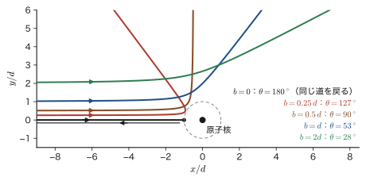
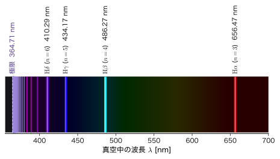
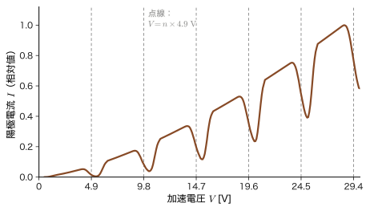
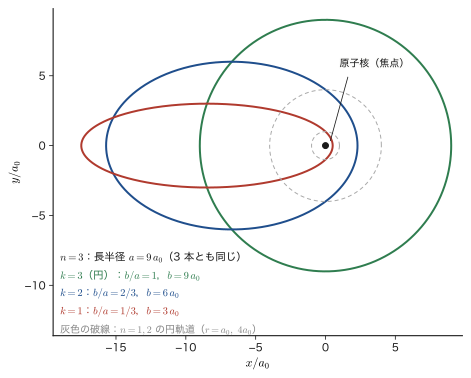
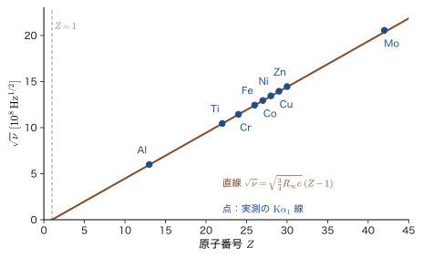

第5章原子の構造と前期量子論 — 原子スペクトルと Bohr 模型
水素ガスを入れたガラス管に高い電圧をかけると，管は淡い赤紫色に光る．この光をプリズムや回折格子で分けてみると，虹のように連続した色の帯ではなく，赤・青緑・青・紫の細い線がとびとびに並んでいる（図5.4）．ナトリウムランプの黄色い光は波長 $589\ \mathrm{nm}$ 付近の 2 本の線，蛍光灯の中で水銀が出す紫外線の主な線は $253.7\ \mathrm{nm}$ というように，原子が出す光は元素ごとに決まった波長の線でできていて，「原子の指紋」として元素分析に使われている．なぜ原子の光はとびとびなのか．この問いに最初に筋の通った答えを与えたのが，1913 年の Bohr（ボーア）の原子模型である．
Bohr の理論の意味を理解するには，その前にどんな原子の絵があり，なぜそれが行き詰まったのかを知る必要がある．Rutherford（ラザフォード）が α 粒子の散乱実験から原子の中心にごく小さな原子核があることを見いだしたとき，古典物理（AD 03「大学基礎物理学」）に従えば，核のまわりを回る電子は電磁波を出してエネルギーを失い，約 $10^{-11}\ \mathrm{s}$ で核に落ちてしまうはずだった．現実の原子は何十億年も安定で，しかも決まった色の光しか出さない．この大きな食い違いを，Planck のエネルギー量子（第3章）と Einstein の光子（第4章）の考えを使って埋めようとしたのが Bohr である．古典力学をそのまま使う部分と，古典力学では説明できない「量子条件」を継ぎ足した部分とが同居する理論なので，どこまでが古典物理でどこからが量子論なのかを，式の一行ずつで見分けながら読んでほしい．
この章では，Thomson から Rutherford までの原子模型と散乱の実験，Balmer と Rydberg が見つけたスペクトルの規則，Bohr の理論（水素原子の半径・速さ・エネルギーを一行ずつ導く）とそれを支えた Franck–Hertz の実験，さらに Bohr の理論を発展させた Sommerfeld の楕円軌道・対応原理・Moseley の法則を順に学び，最後に前期量子論の限界をヘリウム原子を例に数値で確かめる．この限界が，次の第6章の de Broglie の物質波と，第III部の Schrödinger 方程式へ道をつなぐ．ここで得る $a_0=0.0529\ \mathrm{nm}$，$13.606\ \mathrm{eV}$，$\alpha=1/137$ という数値は，原子の世界の「物差し」として本書の最後まで使い続ける．
- Thomson・長岡・Rutherford の原子模型の違いと，$\alpha$ 粒子散乱から原子核が見つかった論理．最接近距離 $d=2Ze_0^2/(4\pi\varepsilon_0K)$ と散乱角の関係，Rutherford の散乱公式を導くこと
- 古典的な原子が約 $1.6\times10^{-11}\ \mathrm{s}$ で崩壊することを Larmor の公式で見積もり，古典物理の困難を数値で言えること
- Balmer の式・Rydberg の式・Ritz の結合原理から，水素のスペクトル系列（Lyman・Balmer・Paschen）の波長を計算できること（真空中と空気中の波長の違いを含む）
- Bohr の 3 つの仮定から $r_n=n^2a_0$，$v_n=\alpha c/n$，$E_n=-13.606\ \mathrm{eV}/n^2$，$R_\infty$ を導き，換算質量による補正（重水素，$\mathrm{He^+}$，ポジトロニウム，ミューオン水素）を計算できること．Bohr 模型の角運動量 $L=n\hbar$ と，量子力学の 1s 状態の $L=0$ の違いを説明できること
- Franck–Hertz の実験が原子のエネルギー準位の実在の証拠になる理由と，蛍光灯の原理
- Wilson–Sommerfeld の量子条件，Sommerfeld の楕円軌道と微細構造定数 $\alpha$，Bohr の対応原理，Moseley の法則，電子スピン仮説と Pauli の排他原理の位置づけ
- 前期量子論の限界（首尾一貫性の欠如，光の波動性との両立，多電子原子）を，ヘリウム原子の基底状態エネルギー（$-108.8\ \mathrm{eV}$ と実測 $-79.0\ \mathrm{eV}$）で数値で示し，波動力学への道筋を説明できること
5.1 原子模型の変遷 — Thomson から Rutherford へ
5.1.1 電子の発見と Thomson の原子模型
19 世紀の終わりごろまで，原子は物質をこれ以上分けられない最小の単位（「原子」は「分割できないもの」という意味のギリシャ語に由来する）と考えられていた．ところが 1897 年に J. J. Thomson（トムソン）は，真空にしたガラス管の中で陰極から出る「陰極線」を電場と磁場で曲げる実験を行い，陰極線が非常に軽い負電荷の粒子の流れであることを示した．この粒子が電子（electron）である．曲がり方から決まる電荷と質量の比（比電荷）$e_0/m_{\mathrm e}$ は，現在の値で $1.7588\times10^{11}\ \mathrm{C/kg}$ であり，水素イオン（陽子）の比電荷の約 1800 倍，すなわち電子の質量は陽子の約 $1/1836$ である．
原子は全体として電気的に中性なので，負電荷の電子を含んでいるなら，それと同じ量の正電荷も原子の中にあるはずである．Thomson は 1904 年に，原子の大きさ（半径 $R\approx10^{-10}\ \mathrm{m}$）にわたって一様に広がった正電荷の球の中に，電子が点々と埋め込まれている，という模型を提案した．干しぶどうの入ったパンにたとえてぶどうパン模型（plum pudding model）とよばれる．この模型では，電子は正電荷の球の内部で，つり合いの位置のまわりを振動し，その振動数の光を出すと考える．
導出：Thomson 模型の電子の振動数
水素のように電子が 1 個の場合を考える．半径 $R$ の球に一様に分布した正電荷 $+e_0$ の中心から距離 $r\lt R$ の位置にある電子（電荷 $-e_0$）を考える．Gauss の法則（AD 03 第35章 35.3）から，半径 $r$ の球面上の電場を決めるのは，その内側にある電荷 $e_0\,(r/R)^3$（電荷は体積に比例する）だけで，向きは中心から外向き，大きさは
$$ E(r)=\frac{1}{4\pi\varepsilon_0}\frac{e_0\,(r/R)^3}{r^2}=\frac{e_0\,r}{4\pi\varepsilon_0R^3} $$となる．電子にはたらく力は $F=-e_0E(r)=-\dfrac{e_0^2}{4\pi\varepsilon_0R^3}\,r$ で，中心からの距離に比例する引力（Hooke の法則の形）である．したがって電子は角振動数
$$ \omega=\sqrt{\frac{e_0^2}{4\pi\varepsilon_0m_{\mathrm e}R^3}} $$の単振動をする（AD 03 第7章 7.1）．$R=0.1\ \mathrm{nm}$ を代入すると $\omega=1.6\times10^{16}\ \mathrm{s^{-1}}$，出る光の波長は $\lambda=2\pi c/\omega\approx118\ \mathrm{nm}$（紫外）となる．
（導出終わり）
この模型が出す光は，電子 1 個につき 1 本の波長だけで，しかも可視光ではなく紫外線になってしまう．水素の可視の 4 本の線（5.2 節）や，その他の多数の線の並び方を説明することはできない．
同じ頃，日本の長岡半太郎は，土星とその環になぞらえて，中心にある大きな正電荷のまわりを多数の電子がリング状に回っているという土星型模型を発表した（1903 年に講演，1904 年に英語の論文）．電子は正電荷のまわりを回る軌道運動をしているという点で，のちの Rutherford の模型に近い．
5.1.2 α 粒子の散乱実験と原子核の発見
2 つの模型のどちらが正しいかは，原子の内部に何かを打ち込んで，その跳ね返り方を見ればわかる．そのために使われたのが，放射性元素が出す $\alpha$ 粒子である．$\alpha$ 粒子の正体は，ヘリウムの原子核 $\mathrm{He^{2+}}$（電荷 $+2e_0$，質量は電子の約 7300 倍）で，ラジウムなどから出る $\alpha$ 粒子の運動エネルギー $K$ は $5\sim9\ \mathrm{MeV}$（$1\ \mathrm{MeV}=10^6\ \mathrm{eV}$）ほどである．$K=5.5\ \mathrm{MeV}$ の速さは $v=\sqrt{2K/m_\alpha}\approx1.6\times10^7\ \mathrm{m/s}$（光速の約 5 %）で，原子内部の電子よりはるかに重くて速い．
1909 年，Rutherford の指導のもとで Geiger（ガイガー）と Marsden（マースデン）は，金などの薄い金属箔に $\alpha$ 粒子を当て，箔の向こう側や手前側に出てくる粒子を，硫化亜鉛を塗った蛍光板の閃光として顕微鏡で数えた．結果は次のとおりだった．
- 大部分の $\alpha$ 粒子は，箔をほとんど曲がらずに通り抜ける．
- しかし，ごくまれに（1 万個に 1 個かそれ以下），90° を超える大きな角度で曲げられる粒子があり，ほとんど跳ね返されるものさえある．
Thomson 模型では，この結果を説明できない．正電荷が原子の大きさ全体にうすく広がっているので，$\alpha$ 粒子が 1 個の原子から受ける力は小さく，原子 1 個を通るときの偏向角は，最も大きく見積もっても，金（$Z=79$，$R=0.14\ \mathrm{nm}$）で $3\times10^{-4}\ \mathrm{rad}$（約 $0.02^\circ$）程度にしかならない（力の大きさを $2Ze_0^2/(4\pi\varepsilon_0R^2)$，力のはたらく時間を $2R/v$ として見積もった）．電子との衝突による偏向はさらに小さい（電子の質量は $\alpha$ 粒子の約 1/7300 なので，静止した電子との衝突で $\alpha$ 粒子が曲げられる角は，最大でも $m_{\mathrm e}/m_\alpha\approx1.4\times10^{-4}\ \mathrm{rad}$ にすぎない）．たとえ箔の中で数千個の原子を通り抜けて，そのたびに向きがでたらめに少しずつ曲げられたとしても，偏向の合計が 90° を超える確率はほとんど 0 である．
Rutherford は 1911 年に，これらの観測を，「原子の正電荷と質量のほとんどすべてが，原子の中心にあるごく小さな領域に集中している」と考えれば，$\alpha$ 粒子が核のすぐそばを通ったときだけ 1 回の衝突で大きく曲げられると説明できることを示した．この小さな正電荷の塊を原子核（nucleus）という．その大きさは原子の半径の約 1 万分の 1 で（金の原子核の半径は約 $7\ \mathrm{fm}=7\times10^{-15}\ \mathrm{m}$），電子は核のまわりの広い空間を運動している．これがRutherford の原子模型（核をもつ原子模型）である．
5.1.3 Rutherford 散乱 — 最接近距離と散乱角
Rutherford の考えを式で確かめよう．必要なのは，Coulomb 力で反発し合う 2 つの正電荷の運動だけで，AD 03 で学んだエネルギー保存則（第4章 4.2）と角運動量保存則（第8章 8.1）が使える．原子核（電荷 $+Ze_0$）は $\alpha$ 粒子（電荷 $+2e_0$，質量 $m_\alpha$）よりずっと重いので，原点に固定されているとみなす．$\alpha$ 粒子と核の距離を $r$ とすると，Coulomb 力のポテンシャルエネルギーは
$$ U(r)=\frac{\kappa_\alpha}{r},\qquad \kappa_\alpha\equiv\frac{2Ze_0^2}{4\pi\varepsilon_0} $$である．遠く離れたところでは $U=0$ で，$\alpha$ 粒子の運動エネルギーは $K=\tfrac12m_\alpha v_0^2$ とする．
最接近距離
$\alpha$ 粒子が核をめがけて正面から進んでいく場合，核に近づくにつれて反発力で減速し，運動エネルギーがすべてポテンシャルエネルギーに変わったところで一瞬止まり，向きを変えて戻っていく．止まる位置までの距離 $d$ を最接近距離（distance of closest approach）という．エネルギー保存則 $K=U(d)=\kappa_\alpha/d$ より，次の結果を得る．
公式5.1 正面衝突の最接近距離
運動エネルギー $K$ の $\alpha$ 粒子が原子番号 $Z$ の原子核に正面から近づくときの最接近距離は
\begin{equation} d=\frac{2Ze_0^2}{4\pi\varepsilon_0K} \label{eq:5-d} \end{equation}である．$e_0^2/(4\pi\varepsilon_0)=1.44\ \mathrm{MeV\,fm}$（$=1.44\ \mathrm{eV\,nm}$）を使うと，$K$ を $\mathrm{MeV}$ 単位で表して $d=2.88\,Z/K\ \mathrm{fm}$ となる．
例題5.1 Rutherford の最接近距離
運動エネルギー $5.5\ \mathrm{MeV}$ の $\alpha$ 粒子が，金（$Z=79$）の原子核に正面衝突するときの最接近距離 $d$ を求めよ．アルミニウム（$Z=13$）の場合も求め，原子核の半径（半径 $R_{\mathrm N}\approx1.2\,A^{1/3}\ \mathrm{fm}$，$A$ は質量数．金は $A=197$）と比べよ．
解答 式 \eqref{eq:5-d} に $e_0^2/(4\pi\varepsilon_0)=1.44\ \mathrm{MeV\,fm}$ と $K=5.5\ \mathrm{MeV}$ を入れる．金では
$$ d=\frac{2\times79\times1.44\ \mathrm{MeV\,fm}}{5.5\ \mathrm{MeV}}=\frac{227.5}{5.5}\ \mathrm{fm}=41.4\ \mathrm{fm} $$である．アルミニウムでは $d=\dfrac{2\times13\times1.44}{5.5}\ \mathrm{fm}=6.8\ \mathrm{fm}$．金の原子核の半径は $R_{\mathrm N}\approx1.2\times197^{1/3}\ \mathrm{fm}=1.2\times5.82\ \mathrm{fm}=7.0\ \mathrm{fm}$ なので，$d=41.4\ \mathrm{fm}$ は核の半径の約 6 倍であり，$\alpha$ 粒子は核に触れる前に折り返す．したがって金への散乱は Coulomb 力だけで決まり，次に導く Rutherford の公式がそのまま成り立つ．一方，アルミニウムの核の半径は $1.2\times27^{1/3}\ \mathrm{fm}=3.6\ \mathrm{fm}$，$\alpha$ 粒子の半径は $1.2\times4^{1/3}\ \mathrm{fm}=1.9\ \mathrm{fm}$ で，両者の和 $5.5\ \mathrm{fm}$ は $d=6.8\ \mathrm{fm}$ に近い．核の表面どうしは $1.3\ \mathrm{fm}$ ほど離れているが，核力のはたらく距離（約 $1\sim2\ \mathrm{fm}$）を考えると，$5.5\ \mathrm{MeV}$ の $\alpha$ 粒子は正面衝突で核力がはたらく距離まで近づく．そのため，軽い原子核では Coulomb 力だけで決まる Rutherford の公式からのずれが現れる．
散乱角と衝突パラメーター
正面衝突でない一般の場合を考える．$\alpha$ 粒子の入射方向の直線が核からどれだけ離れているかを衝突パラメーター（impact parameter）$b$ といい，散乱後の進行方向が入射方向から曲がった角を散乱角 $\theta$ という．$b=0$ が正面衝突（$\theta=180^\circ$）である．
公式5.2 衝突パラメーターと散乱角
\begin{equation} \tan\frac{\theta}{2}=\frac{d}{2b}\qquad\Longleftrightarrow\qquad b=\frac{d}{2}\cot\frac{\theta}{2} \label{eq:5-tan} \end{equation}ここで $d$ は式 \eqref{eq:5-d} の最接近距離である．核に近い（$b$ が小さい）ほど大きく曲がり，$b=d/2$ のとき $\theta=90^\circ$ となる．
導出：散乱角の公式
核を原点に固定し，$\alpha$ 粒子は遠方で速さ $v_0$，衝突パラメーター $b$ で入射するとする．運動を支配するのは Coulomb 力だけなので，2 つの保存則が成り立つ：
- エネルギー：$\tfrac12mv^2+\dfrac{\kappa_\alpha}{r}=\tfrac12mv_0^2=K$（$m=m_\alpha$）
- 角運動量：$L=mv_0b=mr^2\dot{\varphi}$（$\varphi$ は原点まわりの極角．最初の等号は遠方での値）
軌道は，核と最接近点を結ぶ直線（対称軸）について左右対称である（時間の向きを逆にしても運動方程式が変わらないため）．この対称軸の方向を $x'$ 軸とし（核から最接近点に向かう向きを正），軌道上の点の位置を極角 $\varphi$ で表す．入射側の遠方は $\varphi=-\varphi_0$，出射側の遠方は $\varphi=+\varphi_0$ の方向にある．入射前の速度は核に向かう向き，散乱後は核から遠ざかる向きなので，速度の $x'$ 成分は入射前が $-v_0\cos\varphi_0$，散乱後が $+v_0\cos\varphi_0$ となり，運動量の $x'$ 成分の変化は
$$ \Delta p_{x'}=2mv_0\cos\varphi_0\qquad(\ast) $$である．散乱角は $\theta=\pi-2\varphi_0$ なので $\cos\varphi_0=\sin(\theta/2)$ である．
一方，運動量の変化は力積に等しい．力は核から遠ざかる向きで大きさ $\kappa_\alpha/r^2$，その $x'$ 成分は $(\kappa_\alpha/r^2)\cos\varphi$ である．$\dd t=\dfrac{mr^2}{L}\dd\varphi$（角運動量保存則）を使って時間積分を角度の積分に直すと，
$$ \Delta p_{x'}=\int\frac{\kappa_\alpha}{r^2}\cos\varphi\,\dd t=\frac{\kappa_\alpha m}{L}\int_{-\varphi_0}^{\varphi_0}\cos\varphi\,\dd\varphi=\frac{2\kappa_\alpha m}{L}\sin\varphi_0\qquad(\ast\ast) $$となる（$r^2$ が消えるのが要点である）．$(\ast)$ と $(\ast\ast)$ を等しいとおき，$L=mv_0b$ を代入すると，
$$ 2mv_0\cos\varphi_0=\frac{2\kappa_\alpha m}{mv_0b}\sin\varphi_0\quad\Longrightarrow\quad\tan\varphi_0=\frac{mv_0^2\,b}{\kappa_\alpha}=\frac{2Kb}{\kappa_\alpha}=\frac{2b}{d} $$を得る（$d=\kappa_\alpha/K$ を使った）．$\varphi_0=\dfrac{\pi-\theta}{2}$ より $\tan\varphi_0=\cot\dfrac{\theta}{2}$ なので，$\cot\dfrac{\theta}{2}=\dfrac{2b}{d}$，すなわち $\tan\dfrac{\theta}{2}=\dfrac{d}{2b}$ となる．
（導出終わり）
この公式を確かめるために，実際に運動方程式を数値で解いて軌道を描いたのが 図5.2 である．

Rutherford の散乱公式
実験で数えるのは，どの方向に何個の粒子が散乱されるかである．入射粒子の流れの断面積 $\sigma$ を使い，「ある散乱角の範囲へ散乱される粒子が，入射ビームのどれだけの面積から来るか」で表したのが微分断面積（differential cross section）$\dd\sigma/\dd\Omega$（$\dd\Omega=2\pi\sin\theta\,\dd\theta$ は角度 $\theta$ と $\theta+\dd\theta$ のあいだの円環に対応する立体角）である（断面積 $\sigma$ は，Stefan–Boltzmann 定数 $\sigma_{\mathrm{SB}}$ や波束の幅 $\sigma$ とは別の量である）．衝突パラメーターが $b$ と $b+\dd b$ のあいだにある粒子は，半径 $b$ 幅 $\dd b$ の円環（面積 $2\pi b\,\dd b$）を通ってきて，散乱角が $\theta$ のまわりの幅 $\dd\theta$ に入る．したがって
$$ \frac{\dd\sigma}{\dd\Omega}=\frac{2\pi b\,\abs{\dd b}}{2\pi\sin\theta\,\abs{\dd\theta}}=\frac{b}{\sin\theta}\left|\diff{b}{\theta}\right| $$である．式 \eqref{eq:5-tan} の $b=\dfrac{d}{2}\cot\dfrac{\theta}{2}$ を $\theta$ で微分すると $\diff{b}{\theta}=-\dfrac{d}{4}\dfrac{1}{\sin^2(\theta/2)}$ なので，$\sin\theta=2\sin\dfrac{\theta}{2}\cos\dfrac{\theta}{2}$ を使って，
$$ \frac{\dd\sigma}{\dd\Omega}=\frac{1}{2\sin\frac{\theta}{2}\cos\frac{\theta}{2}}\cdot\frac{d}{2}\frac{\cos\frac{\theta}{2}}{\sin\frac{\theta}{2}}\cdot\frac{d}{4}\frac{1}{\sin^2\frac{\theta}{2}}=\frac{d^2}{16}\frac{1}{\sin^4\frac{\theta}{2}} $$を得る．
公式5.3 Rutherford の散乱公式
\begin{equation} \frac{\dd\sigma}{\dd\Omega}=\left(\frac{d}{4}\right)^2\frac{1}{\sin^4(\theta/2)}=\left(\frac{Ze_0^2}{4\pi\varepsilon_0\cdot2K}\right)^2\frac{1}{\sin^4(\theta/2)} \label{eq:5-ruth} \end{equation}$1/\sin^4(\theta/2)$ の依存性は，小さな角度で急激に大きくなる．たとえば，金による散乱で $\theta=10^\circ$ の散乱は $90^\circ$ の約 4300 倍多い．Geiger と Marsden は 1913 年に，散乱角・箔の厚さ・$\alpha$ 粒子の速さ・箔の元素の種類への依存性が式 \eqref{eq:5-ruth} と一致することを確かめ，Rutherford の核の模型を確立した．$90^\circ$ での値は $\dd\sigma/\dd\Omega=d^2/4=(41.4\ \mathrm{fm})^2/4=428\ \mathrm{fm^2}=4.3\ \mathrm{b}$（バーン，$1\ \mathrm{b}=10^{-28}\ \mathrm{m^2}=100\ \mathrm{fm^2}$）$/\mathrm{sr}$ である．
5.1.4 古典的原子の困難
Rutherford の模型は，実験とよく合う一方で，古典物理と重大な矛盾をもっていた．水素原子で確かめよう．電子（質量 $m_{\mathrm e}$，電荷 $-e_0$）が陽子のまわりを半径 $r$ の円軌道で回っているとする．中心力（Coulomb 力）が向心力になるので，
$$ \frac{m_{\mathrm e}v^2}{r}=\frac{e_0^2}{4\pi\varepsilon_0r^2} $$である．運動エネルギーは $\tfrac12m_{\mathrm e}v^2=\dfrac{e_0^2}{8\pi\varepsilon_0r}$，ポテンシャルエネルギーは $-\dfrac{e_0^2}{4\pi\varepsilon_0r}$ なので，全エネルギーは
$$ E=\frac{e_0^2}{8\pi\varepsilon_0r}-\frac{e_0^2}{4\pi\varepsilon_0r}=-\frac{e_0^2}{8\pi\varepsilon_0r} $$である（AD 03 第8章 8.4 の惑星運動と同じ形．半径が小さいほどエネルギーが低い）．ここまでは純粋な古典力学である．
ところが，電磁気学（AD 03 第42章 42.3）によれば，加速度運動する電荷は電磁波を放射する．円運動する電子は向心加速度 $a=v^2/r$ をもつので，電磁波を出し続ける．非相対論的な運動（$v\ll c$）の場合，放射されるパワー（単位時間あたりのエネルギー）は，加速度の大きさ $a$ だけで決まり，Larmor（ラーモア）の公式で与えられる：
\begin{equation} P=\frac{e_0^2a^2}{6\pi\varepsilon_0c^3} \label{eq:5-larmor} \end{equation}この公式は電磁気学の結果で，ここでは結果を認めて使う．$P\propto e_0^2a^2$ となる理由の見通しだけ述べておく．加速度運動する電荷が遠方につくる放射の電場は，加速度 $a$ と電荷 $e_0$ に比例する．電磁波が運ぶ単位面積あたりのパワーは電場の 2 乗に比例するので，全体のパワーは $e_0^2a^2$ に比例する．比例係数 $1/(6\pi\varepsilon_0c^3)$ は，放射の電場から求めたパワーを球面全体で足し合わせて決まる．（次元は $[\mathrm{C^2\,m^2\,s^{-4}}]/[\mathrm{C^2\,N^{-1}m^{-2}\cdot m^3\,s^{-3}}]=\mathrm{N\,m\,s^{-1}}=\mathrm{J/s}$ で，パワーである．）電子はこの分だけエネルギーを失うので，軌道半径はしだいに小さくなる．どれくらいの時間で核に落ちるかを見積もろう．
導出：古典的な原子が崩壊するまでの時間
軌道半径が $r$ のとき，加速度は $a=\dfrac{e_0^2}{4\pi\varepsilon_0m_{\mathrm e}r^2}$ である．これを式 \eqref{eq:5-larmor} に入れる．以下では $\mathcal{C}\equiv\dfrac{e_0^2}{4\pi\varepsilon_0}$ と略記する（$a=\mathcal{C}/(m_{\mathrm e}r^2)$，$\dfrac{e_0^2}{6\pi\varepsilon_0}=\dfrac23\mathcal{C}$）：
$$ P=\frac23\mathcal{C}\frac{a^2}{c^3}=\frac23\frac{\mathcal{C}^3}{m_{\mathrm e}^2c^3}\frac{1}{r^4} $$エネルギーの減少率が放射パワーに等しいので $\dfrac{\dd E}{\dd t}=-P$．$E=-\dfrac{\mathcal{C}}{2r}$ より $\dfrac{\dd E}{\dd t}=\dfrac{\mathcal{C}}{2r^2}\dfrac{\dd r}{\dd t}$ なので，
$$ \frac{\mathcal{C}}{2r^2}\frac{\dd r}{\dd t}=-\frac23\frac{\mathcal{C}^3}{m_{\mathrm e}^2c^3}\frac{1}{r^4} \quad\Longrightarrow\quad r^2\frac{\dd r}{\dd t}=-\frac43\frac{\mathcal{C}^2}{m_{\mathrm e}^2c^3} $$となる．左辺は $\dfrac13\dfrac{\dd(r^3)}{\dd t}$ なので，$\dfrac{\dd(r^3)}{\dd t}=-\dfrac{4\mathcal{C}^2}{m_{\mathrm e}^2c^3}$ と，右辺は時間によらない定数である．半径 $r_0$ から $0$ になるまでの時間 $t_{\mathrm c}$ は，両辺を $0$ から $t_{\mathrm c}$ まで積分して $0-r_0^3=-\dfrac{4\mathcal{C}^2}{m_{\mathrm e}^2c^3}\,t_{\mathrm c}$，すなわち
$$ t_{\mathrm c}=\frac{m_{\mathrm e}^2c^3\,r_0^3}{4\mathcal{C}^2} $$となる．古典電子半径 $r_{\mathrm e}\equiv\dfrac{\mathcal{C}}{m_{\mathrm e}c^2}=\dfrac{e_0^2}{4\pi\varepsilon_0m_{\mathrm e}c^2}=2.818\ \mathrm{fm}$ を使うと $\dfrac{\mathcal{C}^2}{m_{\mathrm e}^2c^3}=r_{\mathrm e}^2c$ なので，
\begin{equation} t_{\mathrm c}=\frac{r_0^3}{4r_{\mathrm e}^2c} \label{eq:5-collapse} \end{equation}（導出終わり）
例題5.2 古典的な水素原子の寿命
水素原子の電子が最初，半径 $r_0=a_0=0.0529\ \mathrm{nm}$ の円軌道を回っていたとして，古典物理の予言する崩壊時間 $t_{\mathrm c}$ を求めよ．また，そのあいだに電子は何回，核のまわりを回るか．
解答 式 \eqref{eq:5-collapse} に $r_0=5.29\times10^{-11}\ \mathrm{m}$，$r_{\mathrm e}=2.818\times10^{-15}\ \mathrm{m}$，$c=2.998\times10^8\ \mathrm{m/s}$ を代入する．
$$ t_{\mathrm c}=\frac{(5.29\times10^{-11})^3}{4\times(2.818\times10^{-15})^2\times2.998\times10^8}\ \mathrm{s}=\frac{1.48\times10^{-31}}{9.52\times10^{-21}}\ \mathrm{s}=1.56\times10^{-11}\ \mathrm{s} $$である．半径 $a_0$ の軌道の速さは，向心力の式 $m_{\mathrm e}v^2/r=\mathcal{C}/r^2$ から $v=\sqrt{\mathcal{C}/(m_{\mathrm e}a_0)}=2.19\times10^6\ \mathrm{m/s}$（光速の $0.73\ \%$ で，Larmor の公式が使える）で，周期は $T=2\pi a_0/v=1.52\times10^{-16}\ \mathrm{s}$ なので，崩壊までに約 $t_{\mathrm c}/T\approx1.0\times10^5$ 回転する．
結論：古典物理に従えば，水素原子は約 $10^{-11}\ \mathrm{s}$，すなわち 100 億分の 1 秒ほどで潰れてしまう．現実の原子は何十億年たっても潰れないので，これは古典物理の重大な破綻である．
もう一つの困難は，出てくる光の性質である．軌道半径が連続的に小さくなるにつれて，電子の回転の振動数も連続的に変化し，放射される電磁波の振動数もそれにつれて連続的に変わる．すなわち，古典物理の予言するスペクトルは，とびとびの線ではなく連続スペクトルである．現実の原子のスペクトルは決まった波長の線（5.2 節）であり，これも古典物理では説明できない．
考察：古典物理の 2 度目の破綻
「原子が安定であること」と「原子が線スペクトルを出すこと」の 2 つは，Rutherford の核のある原子の模型に古典力学と電磁気学を当てはめたときの，避けられない矛盾である．第3章では黒体放射で，古典物理（Rayleigh–Jeans の式）が紫外領域で破綻し，Planck のエネルギー量子でしか救えないことを見た．原子の構造でも，古典物理は再び破綻する．次節で見る Balmer らの実験規則を読み解き，Planck の量子の考えを原子に持ち込んだのが，5.3 節の Bohr の理論である．
5.2 原子スペクトル — Balmer と Rydberg の式
5.2.1 線スペクトルと分光学
Newton は 17 世紀に，太陽光をプリズムに通すと虹の七色に分かれること（スペクトル）を示した．19 世紀になると，スリットを通した光をプリズムや回折格子（AD 03 第16章 16.3：格子定数 $d_{\mathrm g}$ の格子では $d_{\mathrm g}\sin\theta=m\lambda$ の方向に波長 $\lambda$ の光が強め合う）で分ける分光器が発達し，光の波長を精密に測れるようになった．
Fraunhofer（フラウンホーファー）は 1814 年，太陽のスペクトルの連続した色の帯に，多数の暗い線（Fraunhofer 線）が走っていることを詳しく調べた．1859 年に Kirchhoff（キルヒホッフ）と Bunsen（ブンゼン）は，ナトリウムを炎に入れたときに出る黄色い明るい線が，太陽のスペクトルの暗い線（D 線）と同じ波長にあることを見いだし，次の原理を確立した．
- 高温の気体状の原子は，元素ごとに決まった波長の光だけを放射する（輝線スペクトル）．
- 同じ元素の原子は，連続スペクトルの光が通り抜けるとき，同じ波長の光だけを吸収する（吸収スペクトル．Fraunhofer 線の正体）．
この結果，遠い太陽や星の光を分析するだけで，そこにある元素がわかるようになった．セシウムやルビジウムは，スペクトルの新しい線として発見された元素であり，ヘリウム（Helium は太陽の神 Helios にちなむ）は 1868 年に，太陽のスペクトルの未知の黄色い線として先に発見された．
元素ごとに決まった波長の線が現れるという事実は，原子の内部が何か決まったとびとびの状態をもっていることを強く示唆していた．最も単純な水素原子の線の波長を規則で表そうという試みが，19 世紀後半に行われた．
5.2.2 Balmer の式（1885）
スイスの数学教師 Balmer（バルマー）は 1885 年に，水素の可視光領域の 4 本の線（波長の測定値は Ångström（オングストローム）らによる）の波長が，$n=3,4,5,6$ として
\begin{equation} \lambda=B\,\frac{n^2}{n^2-4}\qquad(B=364.56\ \mathrm{nm};\ n=3,4,5,\dots) \label{eq:5-balmer} \end{equation}という簡単な式で表せることを見いだした．$n=3$ から順に $656.21,\ 486.08,\ 434.00,\ 410.13\ \mathrm{nm}$ で，現在知られている値（空気中の波長 $656.28,\ 486.13,\ 434.05,\ 410.17\ \mathrm{nm}$）と約 1 万分の 1 の相対誤差で一致する．Balmer の式は $n=7,8,\dots$ にあたる近紫外の線（真空中で $n=7$ は $397\ \mathrm{nm}$．$380\ \mathrm{nm}$ より短くなるのは $n\ge10$）の存在も予言し，その後，恒星のスペクトルなどに見つかっていた線とよく一致することが確かめられた．$n\to\infty$ で波長は $B=364.56\ \mathrm{nm}$ に近づき，線の間隔はしだいにせばまって系列の端（系列極限）に集まる．
式 \eqref{eq:5-balmer} を波長の逆数（波数，wavenumber）$\tilde\nu\equiv1/\lambda$ の式に書き直すと，$\dfrac1\lambda=\dfrac{n^2-4}{Bn^2}=\dfrac4B\left(\dfrac14-\dfrac1{n^2}\right)$，すなわち
$$ \frac1\lambda=R\left(\frac{1}{2^2}-\frac{1}{n^2}\right),\qquad R=\frac4B=1.097\times10^7\ \mathrm{m^{-1}} $$という形になる．謎の定数 $B$ は，見やすい定数 $R$ に置き換えられ，「$2^2$ と $n^2$ の逆数の差」という構造がはっきり見える．
5.2.3 Rydberg の式と Ritz の結合原理
Rydberg（リュードベリ）は 1888 年に，Balmer の式を一般化して，水素の（可視だけでなく）すべての線を含む式に整理した．
法則5.1 Rydberg の式
水素の線スペクトルの波長 $\lambda$ は，2 つの正の整数 $m\lt n$ を使って
\begin{equation} \frac1\lambda=R\left(\frac{1}{m^2}-\frac{1}{n^2}\right)\qquad(m=1,2,3,\dots;\ n=m+1,m+2,\dots) \label{eq:5-rydberg} \end{equation}と表される．$R$ は Rydberg 定数とよばれる定数で，水素では $R_{\mathrm H}=1.096\,776\times10^7\ \mathrm{m^{-1}}$ である．$m$ を決めて $n$ を動かした線のまとまりを系列（series）という．
この式は，水素の線の波数が，$T_n\equiv R/n^2$ という数（項，term）の差 $\tilde\nu=T_m-T_n$ で表されることを意味している．Ritz（リッツ）は 1908 年，これを一般の原子のスペクトルに拡張して，次の経験則を示した．
法則5.2 Ritz の結合原理（1908）
原子のスペクトルの線の波数は，その原子に固有の項 $T_1,T_2,T_3,\dots$ の差 $\tilde\nu=T_m-T_n$ で表される．2 本の線の波数の和や差も，やはり別の線（もしあれば）の波数になる．
たとえば水素では，$n=3$ から $n=1$ への線（Lyman $\beta$）は，$T_1-T_3=(T_1-T_2)+(T_2-T_3)$ と分解でき，Lyman $\alpha$（$T_1-T_2$）と Balmer の $\mathrm H\alpha$（$T_2-T_3$）の波数の和になる．この「線の波数が項の差になる」という規則は，Bohr の理論の最も重要なヒントになった．各項を $hc$ 倍すればエネルギーの次元をもち，線の波数の差がエネルギーの差に対応する，という読み方ができるからである（5.3 節）．
Rydberg の式で $m=1,2,3,\dots$ に対応する系列が，次の表のとおり，それぞれの発見者の名前でよばれている．表の波長は，水素原子の Rydberg 定数 $R_{\mathrm H}$ を使って式 \eqref{eq:5-rydberg} から計算した真空中の値である．
| 系列 | $m$（下の準位） | 領域 | 最初の線（$n=m+1$） | 系列極限（$n\to\infty$） | 発見（年） |
|---|---|---|---|---|---|
| Lyman | 1 | 真空紫外 | $121.57\ \mathrm{nm}$（Ly$\alpha$） | $91.18\ \mathrm{nm}$ | Lyman（1906–14） |
| Balmer | 2 | 可視〜近紫外 | $656.47\ \mathrm{nm}$（H$\alpha$） | $364.71\ \mathrm{nm}$ | Balmer（1885） |
| Paschen | 3 | 近赤外 | $1875.63\ \mathrm{nm}$ | $820.59\ \mathrm{nm}$ | Paschen（1908） |
| Brackett | 4 | 赤外 | $4052.28\ \mathrm{nm}$ | $1458.82\ \mathrm{nm}$ | Brackett（1922） |
| Pfund | 5 | 赤外 | $7459.88\ \mathrm{nm}$ | $2279.41\ \mathrm{nm}$ | Pfund（1924） |
各系列の様子を図にしたのが 図5.3 である．項 $T_n=R/n^2$ に $hc$ を掛けて $E_n=-hcR/n^2$ とおいた準位を，エネルギーの高さに並べ，線を準位間の矢印として描いた．（この $E_n$ の値が $-13.606\ \mathrm{eV}/n^2$ になることは，5.3 節で Bohr の理論から導く．）
5.2.4 真空中の波長と空気中の波長
波長の値を読むとき，1 つ注意がある．光の波長は，光が進む媒質によって変わる．振動数 $\nu$ は変わらないが，媒質中の光速は真空中の $c$ の $1/n_{\mathrm r}$ になるので，波長は $\lambda=\lambda_{\mathrm{vac}}/n_{\mathrm r}$（$n_{\mathrm r}$ は屈折率）となる．空気の屈折率は $n_{\mathrm r}=1.000277$ 程度（可視光，標準的な大気）なので，空気中の波長は真空中の波長よりも約 $0.028\ \%$ 短い．$\mathrm H\alpha$ では $656.47\ \mathrm{nm}$（真空）が約 $656.3\ \mathrm{nm}$（空気中）になる．可視光の分光の文献には，波長が空気中の値で書かれていることが多い（真空紫外領域（波長 $200\ \mathrm{nm}$ 以下）は空気が光を吸収するので真空中で測り，真空中の波長を書く）．Bohr の理論のようにエネルギーや振動数と結びつけるときは，媒質に依存しない真空中の波長（または波数，振動数）を使わなければならない．
| 線 | 遷移 | 真空中（式 \eqref{eq:5-rydberg}，$R_{\mathrm H}$） | 空気中（測定値） | Balmer の式 \eqref{eq:5-balmer} | 色 |
|---|---|---|---|---|---|
| H$\alpha$ | $3\to2$ | 656.47 | 656.28 | 656.21 | 赤 |
| H$\beta$ | $4\to2$ | 486.27 | 486.13 | 486.08 | 青緑 |
| H$\gamma$ | $5\to2$ | 434.17 | 434.05 | 434.00 | 青 |
| H$\delta$ | $6\to2$ | 410.29 | 410.17 | 410.13 | 紫 |

例題5.3 Balmer 系列の波長
$R_{\mathrm H}=1.096\,776\times10^7\ \mathrm{m^{-1}}$ から，Balmer 系列の H$\alpha$，H$\beta$，H$\gamma$，H$\delta$ の真空中の波長と系列極限の波長を求めよ．また，H$\alpha$ の空気中の波長を，空気の屈折率 $1.000277$ を使って求めよ．
解答 式 \eqref{eq:5-rydberg} で $m=2$ とおくと，$\dfrac1\lambda=R_{\mathrm H}\left(\dfrac14-\dfrac1{n^2}\right)$ である．
- $n=3$（H$\alpha$）：$\dfrac14-\dfrac19=\dfrac{5}{36}=0.138\,889$，$\dfrac1\lambda=1.096\,776\times10^7\times0.138\,889=1.5233\times10^6\ \mathrm{m^{-1}}$ より $\lambda=6.5647\times10^{-7}\ \mathrm{m}=656.47\ \mathrm{nm}$．
- $n=4$（H$\beta$）：$\dfrac14-\dfrac1{16}=\dfrac{3}{16}=0.1875$，$\dfrac1\lambda=2.0565\times10^6\ \mathrm{m^{-1}}$ より $\lambda=486.27\ \mathrm{nm}$．
- $n=5$（H$\gamma$）：$\dfrac14-\dfrac1{25}=\dfrac{21}{100}=0.21$，$\dfrac1\lambda=2.3032\times10^6\ \mathrm{m^{-1}}$ より $\lambda=434.17\ \mathrm{nm}$．
- $n=6$（H$\delta$）：$\dfrac14-\dfrac1{36}=\dfrac{2}{9}=0.2222$，$\dfrac1\lambda=2.4373\times10^6\ \mathrm{m^{-1}}$ より $\lambda=410.29\ \mathrm{nm}$．
- 系列極限（$n\to\infty$）：$\dfrac1\lambda=\dfrac{R_{\mathrm H}}{4}=2.7419\times10^6\ \mathrm{m^{-1}}$ より $\lambda=4/R_{\mathrm H}=364.71\ \mathrm{nm}$．
空気中の H$\alpha$ は $\lambda_{\mathrm{air}}=656.47\ \mathrm{nm}/1.000277=656.29\ \mathrm{nm}$（表5.2 の測定値 $656.28\ \mathrm{nm}$ と 0.01 nm の範囲で一致する）．線の間隔は，$656.47-486.27=170.2\ \mathrm{nm}$，$486.27-434.17=52.1\ \mathrm{nm}$，$434.17-410.29=23.9\ \mathrm{nm}$ と急速にせばまる．
例題5.4 Lyman $\alpha$ 線と系列極限
水素の Lyman 系列の最初の線 Ly$\alpha$（$2\to1$）の波長と光子のエネルギー，および系列極限の波長とそのエネルギーを求めよ．これらはどの領域の光か．
解答 式 \eqref{eq:5-rydberg} で $m=1$：$\dfrac1\lambda=R_{\mathrm H}\left(1-\dfrac1{n^2}\right)$．Ly$\alpha$ は $n=2$ なので $\dfrac1\lambda=\dfrac34R_{\mathrm H}=8.2258\times10^6\ \mathrm{m^{-1}}$，$\lambda=121.57\ \mathrm{nm}$．光子のエネルギーは $E=hc/\lambda=\dfrac{1239.84\ \mathrm{eV\,nm}}{121.57\ \mathrm{nm}}=10.20\ \mathrm{eV}$ である．系列極限は $n\to\infty$ で $\dfrac1\lambda=R_{\mathrm H}$，$\lambda=1/R_{\mathrm H}=91.18\ \mathrm{nm}$，$E=1239.84/91.18=13.60\ \mathrm{eV}$ である．
可視光の波長は約 $380\sim780\ \mathrm{nm}$ なので，Lyman 系列はすべて紫外線（それも $200\ \mathrm{nm}$ 以下の真空紫外）である．空気中の酸素などがこの領域の光を吸収するので，装置を真空にして測る．系列極限の $13.60\ \mathrm{eV}$ は水素原子のイオン化エネルギー（基底状態の電子を原子から引き離すのに必要なエネルギー）に等しい．これは，項の差で表される「エネルギー」の意味を考える手がかりになる（5.3 節）．
5.2.5 分光の応用
応用：原子の「指紋」を使う分析技術
原子の線スペクトルは，元素分析の基本的な道具である．身近な例と，材料の分析法を挙げる．
- 炎色反応：金属の塩を炎に入れると，ナトリウムは黄色（$589.0\ \mathrm{nm}$ と $589.6\ \mathrm{nm}$ の D 線．光子のエネルギーは $2.105\ \mathrm{eV}$ と $2.103\ \mathrm{eV}$），リチウムは赤（$670.8\ \mathrm{nm}$，$1.85\ \mathrm{eV}$）に見える．花火の色も，添加した金属の輝線の色である．低圧ナトリウムランプ（トンネルの照明）が出すのも，ほぼこの黄色の D 線だけである．
- 原子吸光分析・ICP 発光分析：試料を高温にして原子にし，吸収または放射する線の波長から元素の種類を，強度から量を決める．金属・セラミックス・水質の微量元素の定量に広く使われる．
- 天体の分光：星の光の吸収線から組成がわかり，H$\alpha$ 線の波長のずれ（Doppler 効果，宇宙の膨張による赤方偏移）から星や銀河の運動を測る．
- 蛍光灯：水銀原子の $253.7\ \mathrm{nm}$ の線を利用する（5.4 節）．
5.3 Bohr の原子模型（1913）
5.3.1 原子構造の量子論の始まりと 3 つの仮定
原子構造の量子論の歩み
原子構造の量子論は，1913 年に提唱された Bohr の理論に始まった．この理論は，1920 年代半ばまでに，Bohr–Sommerfeld の量子条件（5.5.1 節，5.5.2 節），電子スピン仮説と Pauli の排他原理（5.5.5 節）によって著しい発展をとげた．ただし，この理論にはいくつかの欠陥と曖昧さがあり，理論として首尾一貫していなかった（5.6 節）．そこで 1920 年代後半に，de Broglie の物質波理論，Schrödinger の波動力学，Heisenberg の行列力学が登場して，原子構造の量子論が完成する．この章は，その最初の段階——Bohr の理論とその発展——を扱う．
Bohr（Niels Bohr，デンマーク）は，Rutherford の研究室に滞在した経験をもとに，1913 年に，前節までに見た 2 つの困難（原子の安定性と，線スペクトルの規則）を同時に解決する理論を発表した．彼が採ったのは，古典物理の一部（Coulomb 力のもとでの円運動）は認めつつ，古典物理が予言する 2 点（円運動する電子は光を出してエネルギーを失う／放射の振動数は電子の回転の振動数に等しい）を捨て，代わりに，Planck の量子（第3章）と Einstein の光子（第4章）に似た「とびとびの状態」の考えを持ち込むことだった．次の 3 つの仮定にまとめられる．
公理5.1 定常状態
原子の中の電子は，Coulomb 力を向心力とする古典力学の円運動のうち，ある特別な軌道（定常状態，stationary state）だけをとることができる．定常状態にあるあいだは，古典電磁気学の予言に反して電磁波を放射せず，エネルギー $E_n$（$n$ は公理5.3 で導入する量子数）は一定である．
公理5.2 振動数条件
電子がエネルギー $E_n$ の定常状態から，よりエネルギーの低い $E_m$ の定常状態へ移る（量子飛躍，quantum jump）とき，そのエネルギーの差を，振動数 $\nu$ の光子 1 個として放出する：
\begin{equation} h\nu=E_n-E_m\qquad(n\gt m,\ E_n\gt E_m) \label{eq:5-freq} \end{equation}逆に，この振動数の光子を吸収すると，$E_m$ の状態から $E_n$ の状態へ移る．（下の準位を $m$，上の準位を $n$ と書き，Rydberg の式（法則5.1）と同じにそろえた．）
公理5.3 角運動量の量子条件
定常状態の軌道は，電子の角運動量 $L=m_{\mathrm e}vr$ が $\hbar=h/2\pi$ の整数倍になるものに限られる：
\begin{equation} L=m_{\mathrm e}vr=n\hbar\qquad(n=1,2,3,\dots) \label{eq:5-quant} \end{equation}ここで $h$ は Planck 定数（第3章），$n$ は量子数（主量子数）とよばれる．
公理5.2 の左辺は，光子のエネルギー（Planck–Einstein の関係，第4章 4.4）そのものである：
$$ E_{\mathrm{ph}}=h\nu=\hbar\omega,\qquad p_{\mathrm{ph}}=\frac{h}{\lambda}=\hbar k\qquad\left(\omega=2\pi\nu,\ k=\frac{2\pi}{\lambda}\right) $$ここで $\omega$ は角振動数，$k$ は波数である．質量ゼロの光子では $E=pc$ なので，運動量は $p_{\mathrm{ph}}=h\nu/c=h/\lambda=\hbar k$ となり，これは 5.6 節と第6章で重要になる．また，公理5.2 に Rydberg の式（法則5.1）と Ritz の結合原理（法則5.2）を組み合わせると，準位のエネルギーは $E_n=-hcR/n^2$ の形をしているはずだとわかる．波数の差 $\tilde\nu=T_m-T_n$ に $hc$ を掛けたものが，エネルギーの差だからである．Bohr の目標は，この $E_n$ を，量子条件（公理5.3）と古典力学だけから導き，Rydberg 定数 $R$ の値まで予言することだった．
イメージ：3 つの仮定は何を捨て，何を残したか
3 つの仮定の位置づけを整理する．
- 古典物理をそのまま使う部分：電子は陽子のまわりを Coulomb 力で円運動する（Newton の運動方程式）．
- 古典物理を捨てる部分：円運動する電荷は電磁波を出してエネルギーを失う，という電磁気学の結論（公理5.1）．放射の振動数が電子の回転の振動数に等しい，という結論（公理5.2）．
- 量子論を持ち込む部分：軌道は角運動量が $\hbar$ の整数倍のものに限る（公理5.3）．エネルギーの差が光子 1 個の $h\nu$ に対応する（公理5.2）．
Bohr が最初に使った量子条件は，角運動量ではなく，電子の運動エネルギー $T$ と軌道を回る回転数 $f$ の関係 $T=\tfrac12nhf$ であった．円軌道では $T=\tfrac12L\omega=\pi Lf$（$\omega=2\pi f$）なので，$\pi Lf=\tfrac12nhf$ から $L=nh/2\pi=n\hbar$ となり，式 \eqref{eq:5-quant} と同じ内容である．
5.3.2 水素原子の半径・速さ・エネルギー
3 つの仮定から，水素原子の定常状態の半径・速さ・エネルギーを導こう．古典力学の部分と量子条件の部分を区別して，1 行ずつ計算する．（この章では，水素の Bohr 模型と箱の中の粒子の量子数は $n=1,2,3,\dots$，調和振動子の量子数は $n=0,1,2,\dots$ と数える．）
導出：Bohr 模型の半径・速さ・エネルギー
[i] 古典力学の部分（運動方程式）．陽子（電荷 $+e_0$）のまわりを，電子（質量 $m_{\mathrm e}$，電荷 $-e_0$）が半径 $r$，速さ $v$ の円軌道で回る．Coulomb 力が向心力なので，
$$ \frac{m_{\mathrm e}v^2}{r}=\frac{e_0^2}{4\pi\varepsilon_0r^2}\qquad\Longrightarrow\qquad m_{\mathrm e}v^2=\frac{e_0^2}{4\pi\varepsilon_0r} \tag{a} $$（陽子は電子より約 1836 倍重いので，静止しているとみなす．この近似の補正は 5.3.4 節で扱う）．
[ii] 量子の部分（量子条件）．式 \eqref{eq:5-quant} より
$$ v=\frac{n\hbar}{m_{\mathrm e}r} \tag{b} $$[iii] 半径．(b) を (a) の左辺に代入する．$m_{\mathrm e}v^2=m_{\mathrm e}\dfrac{n^2\hbar^2}{m_{\mathrm e}^2r^2}=\dfrac{n^2\hbar^2}{m_{\mathrm e}r^2}$ なので，
$$ \frac{n^2\hbar^2}{m_{\mathrm e}r^2}=\frac{e_0^2}{4\pi\varepsilon_0r}\qquad\Longrightarrow\qquad r_n=\frac{4\pi\varepsilon_0\hbar^2}{m_{\mathrm e}e_0^2}\,n^2\equiv n^2a_0 \tag{c} $$となる．$n=1$ の軌道の半径 $a_0\equiv\dfrac{4\pi\varepsilon_0\hbar^2}{m_{\mathrm e}e_0^2}$ を Bohr 半径とよぶ．数値は $a_0=5.2918\times10^{-11}\ \mathrm{m}=0.0529\ \mathrm{nm}=0.529\ \text{Å}$ である．
[iv] 速さ．(b) に (c) を入れる：$v_n=\dfrac{n\hbar}{m_{\mathrm e}n^2a_0}=\dfrac{1}{n}\dfrac{\hbar}{m_{\mathrm e}a_0}$．ここで $a_0$ の定義から $\dfrac{\hbar}{m_{\mathrm e}a_0}=\dfrac{\hbar\,m_{\mathrm e}e_0^2}{m_{\mathrm e}\,4\pi\varepsilon_0\hbar^2}=\dfrac{e_0^2}{4\pi\varepsilon_0\hbar}$ である．真空中の光速 $c$ と無次元の微細構造定数
$$ \alpha\equiv\frac{e_0^2}{4\pi\varepsilon_0\hbar c}=\frac{1}{137.036} $$を使うと $\dfrac{e_0^2}{4\pi\varepsilon_0\hbar}=\alpha c$ と書けるので（$\alpha$ は $\alpha$ 粒子の $\alpha$ とは別のもので，以後この節では，断らない限り微細構造定数を指す），
$$ v_n=\frac{\alpha c}{n} \tag{d} $$を得る．$n=1$ では $v_1=\alpha c=2.19\times10^6\ \mathrm{m/s}$ で，光速の $0.73\ \%$ である．
[v] エネルギー．全エネルギーは運動エネルギーとポテンシャルエネルギーの和 $E=\tfrac12m_{\mathrm e}v^2-\dfrac{e_0^2}{4\pi\varepsilon_0r}$ である．(a) より $\dfrac{e_0^2}{4\pi\varepsilon_0r}=m_{\mathrm e}v^2$（ポテンシャルエネルギーは運動エネルギーの $-2$ 倍）なので，
$$ E=\tfrac12m_{\mathrm e}v^2-m_{\mathrm e}v^2=-\tfrac12m_{\mathrm e}v^2 \tag{e} $$すなわち全エネルギーは運動エネルギーの符号を変えたものである（束縛状態のビリアル定理）．(d) を入れると，
$$ E_n=-\frac12m_{\mathrm e}\left(\frac{\alpha c}{n}\right)^2=-\frac{m_{\mathrm e}c^2\alpha^2}{2}\frac{1}{n^2} \tag{f} $$である．$\alpha$ の定義を戻して書き直すと，$\tfrac12m_{\mathrm e}v_n^2=\tfrac12m_{\mathrm e}\left(\dfrac{e_0^2}{4\pi\varepsilon_0\hbar n}\right)^2=\dfrac{m_{\mathrm e}e_0^4}{2(4\pi\varepsilon_0)^2\hbar^2n^2}$ となる．
（導出終わり）
定理5.1 Bohr 模型の水素原子
水素原子（原子核が電荷 $+e_0$）の $n$ 番目の定常状態の軌道半径・速さ・エネルギーは，
\begin{equation} r_n=n^2a_0,\qquad a_0=\frac{4\pi\varepsilon_0\hbar^2}{m_{\mathrm e}e_0^2}=0.0529\ \mathrm{nm} \label{eq:5-rn} \end{equation} \begin{equation} v_n=\frac{\alpha c}{n},\qquad \alpha=\frac{e_0^2}{4\pi\varepsilon_0\hbar c}=\frac{1}{137.036} \label{eq:5-vn} \end{equation} \begin{equation} E_n=-\frac{m_{\mathrm e}e_0^4}{2(4\pi\varepsilon_0)^2\hbar^2}\frac{1}{n^2}=-\frac{m_{\mathrm e}e_0^4}{8\varepsilon_0^2h^2}\frac{1}{n^2}=-\frac{13.606\ \mathrm{eV}}{n^2}\qquad(n=1,2,3,\dots) \label{eq:5-En} \end{equation}である．（第 2 の等号は $\hbar=h/2\pi$ より $2(4\pi\varepsilon_0)^2\hbar^2=2\cdot16\pi^2\varepsilon_0^2\cdot h^2/4\pi^2=8\varepsilon_0^2h^2$ となることによる．）原子核の電荷が $+Ze_0$ の水素類似イオン（$\mathrm{He^+}$，$\mathrm{Li^{2+}}$ など）では $e_0^2\to Ze_0^2$ と置き換えて，$r_n=n^2a_0/Z$，$v_n=Z\alpha c/n$，$E_n=-Z^2\cdot13.606\ \mathrm{eV}/n^2$ となる．
記号：$a_0$ と関連シミュレーターの $a_{\mathrm B}$
本書では Bohr 半径を $a_0$ と書く．関連シミュレーター（水素原子・変分原理・摂動論など）では同じ量を $a_{\mathrm B}$ と書いているが，どちらも $a_0=4\pi\varepsilon_0\hbar^2/(m_{\mathrm e}e_0^2)$ を表す．式 \eqref{eq:5-En} の $E_n$ は，第III部で Schrödinger 方程式から導く水素原子のエネルギー準位と同じ式になる．
数値を確かめよう．$m_{\mathrm e}c^2=0.510\,999\ \mathrm{MeV}$，$\alpha^2=5.3251\times10^{-5}$ より，式 (f) の係数は $\dfrac12m_{\mathrm e}c^2\alpha^2=\dfrac12\times510\,999\ \mathrm{eV}\times5.3251\times10^{-5}=13.606\ \mathrm{eV}$ となる．エネルギーの次元は，$m_{\mathrm e}v^2$ で確かめられる（質量 × 速さの 2 乗 $=\mathrm{kg\,m^2/s^2}=\mathrm{J}$）．この $13.606\ \mathrm{eV}$ は $n=1$ の状態から電子を無限遠まで引き離すのに必要なエネルギー，すなわち水素原子のイオン化エネルギー（束縛エネルギー）である．
| $n$ | 半径 $r_n=n^2a_0$ | 速さ $v_n=\alpha c/n$ | $v_n/c$ | 周期 $T_n=2\pi r_n/v_n=n^3T_1$ | エネルギー $E_n$ |
|---|---|---|---|---|---|
| 1 | $0.0529\ \mathrm{nm}$ | $2.19\times10^6\ \mathrm{m/s}$ | $0.730\ \%$ | $1.52\times10^{-16}\ \mathrm{s}$ | $-13.606\ \mathrm{eV}$ |
| 2 | $0.212\ \mathrm{nm}$ | $1.09\times10^6\ \mathrm{m/s}$ | $0.365\ \%$ | $1.22\times10^{-15}\ \mathrm{s}$ | $-3.401\ \mathrm{eV}$ |
| 3 | $0.476\ \mathrm{nm}$ | $0.729\times10^6\ \mathrm{m/s}$ | $0.243\ \%$ | $4.10\times10^{-15}\ \mathrm{s}$ | $-1.512\ \mathrm{eV}$ |
| 4 | $0.847\ \mathrm{nm}$ | $0.547\times10^6\ \mathrm{m/s}$ | $0.182\ \%$ | $9.73\times10^{-15}\ \mathrm{s}$ | $-0.850\ \mathrm{eV}$ |
| 5 | $1.32\ \mathrm{nm}$ | $0.438\times10^6\ \mathrm{m/s}$ | $0.146\ \%$ | $1.90\times10^{-14}\ \mathrm{s}$ | $-0.544\ \mathrm{eV}$ |
例題5.5 Bohr 模型の水素原子の数値
$n=1$ の状態について，軌道半径 $r_1$，速さ $v_1$，光速との比，回転の周期 $T_1$，全エネルギー $E_1$ を数値で求めよ．また，角運動量が $\hbar$ になることを確かめよ．
解答 $r_1=a_0=\dfrac{4\pi\varepsilon_0\hbar^2}{m_{\mathrm e}e_0^2}=5.29\times10^{-11}\ \mathrm{m}=0.0529\ \mathrm{nm}$．速さは $v_1=\alpha c=\dfrac{2.998\times10^8}{137.036}\ \mathrm{m/s}=2.19\times10^6\ \mathrm{m/s}$，$v_1/c=\alpha=0.73\ \%$．周期は
$$ T_1=\frac{2\pi r_1}{v_1}=\frac{2\pi\times5.29\times10^{-11}}{2.19\times10^6}\ \mathrm{s}=1.52\times10^{-16}\ \mathrm{s} $$（回転数は $1/T_1=6.58\times10^{15}\ \mathrm{s^{-1}}$）．エネルギーは，(f) より $E_1=-\tfrac12m_{\mathrm e}v_1^2=-\tfrac12\times9.109\times10^{-31}\times(2.19\times10^6)^2\ \mathrm{J}=-2.18\times10^{-18}\ \mathrm{J}$．これを $1.602\times10^{-19}\ \mathrm{J/eV}$ で割って $E_1=-13.6\ \mathrm{eV}$（より正確には $-13.606\ \mathrm{eV}$）を得る．角運動量は $L=m_{\mathrm e}v_1r_1=9.109\times10^{-31}\times2.19\times10^6\times5.29\times10^{-11}\ \mathrm{J\,s}=1.05\times10^{-34}\ \mathrm{J\,s}=\hbar$ となり，量子条件 $L=1\cdot\hbar$ が満たされている．
この $r_1$ が「水素原子の大きさ」，$E_1$ が「化学結合や電子励起のエネルギーの目安」（数 eV）である．電子の速さが光速の $1/137$ にすぎないことは，原子の中では相対論的な効果が小さい（ただし重い元素の内殻電子では $Z\alpha\sim1$ となって大きくなる）ことを意味する．
5.3.3 スペクトルとの一致 — Rydberg 定数を理論から求める
公理5.2 と式 \eqref{eq:5-En} を組み合わせて，$n$ 番目の準位から $m$ 番目の準位（$n\gt m$）に移るときに出る光の波数を求める．$h\nu=E_n-E_m$ に $\nu=c/\lambda$ を入れて，
$$ \frac1\lambda=\frac{E_n-E_m}{hc}=\frac{m_{\mathrm e}e_0^4}{8\varepsilon_0^2h^3c}\left(\frac1{m^2}-\frac1{n^2}\right) $$となる．これは Rydberg の式 \eqref{eq:5-rydberg} と全く同じ形であり，しかも Rydberg 定数が基礎物理定数だけで表される：
\begin{equation} R_\infty=\frac{m_{\mathrm e}e_0^4}{8\varepsilon_0^2h^3c}=\frac{m_{\mathrm e}e_0^4}{4\pi c\,(4\pi\varepsilon_0)^2\hbar^3}=\frac{\alpha}{4\pi a_0}=1.097\,373\,157\times10^7\ \mathrm{m^{-1}} \label{eq:5-Rinf} \end{equation}（添字 $\infty$ は，原子核の質量を無限大とみなしたときの値の意味である．1 つ目と 2 つ目の等号は $8\varepsilon_0^2h^3=64\pi^3\varepsilon_0^2\hbar^3=4\pi(4\pi\varepsilon_0)^2\hbar^3$ による．3 つ目の等号は $E_1=-hcR_\infty$ と $E_1=-\tfrac12m_{\mathrm e}c^2\alpha^2$，および $a_0=\hbar/(m_{\mathrm e}c\alpha)$ から出る．）Bohr は，1913 年に知られていた $e_0$，$m_{\mathrm e}$，$h$ の値から $R$ を計算して，実測の Rydberg 定数と測定誤差の範囲で一致することを示した．経験則の定数が，Planck 定数・電子の質量と電荷から計算できたのである．
Bohr の理論は，すでに知られていた Balmer 系列（可視）と Paschen 系列（近赤外，1908 年）を同じ式で説明し，Lyman が 1906 年から 1914 年にかけて観測した紫外の Lyman 系列（$n=1$ への遷移）も統一して説明した（図5.3）．さらに，まだ観測されていなかった $n=4,5$ への赤外の系列（Brackett 系列，Pfund 系列）の存在を予言し，これらは 1922 年と 1924 年に観測された．
この結果が意味することを整理しておこう．原子の線スペクトルは，2 つの「エネルギー準位」のあいだの遷移に 1 個の光子が対応するために，準位の差として現れる．Ritz の結合原理は，各項 $T_n$ が準位のエネルギー $E_n=-hcT_n$ を表していたという意味だと読み替えられる．なぜ準位がとびとびなのかを 5.3 節の仮定は説明していない（$L=n\hbar$ は要請にすぎない）が，実験事実と一致する理論の骨格として，Bohr の理論の意義は大きい．
5.3.4 換算質量と水素類似の原子
式 \eqref{eq:5-Rinf} の値 $R_\infty=1.097\,373\times10^7\ \mathrm{m^{-1}}$ は，実測の水素の値 $R_{\mathrm H}=1.096\,776\times10^7\ \mathrm{m^{-1}}$ より約 $0.054\ \%$ 大きい．これは，原子核（陽子）が静止していると仮定したためである．実際には，電子と核は共通の重心のまわりを回る．2 つの粒子（質量 $m_{\mathrm e}$ と $M$）のこの 2 体運動を，重心の運動と相対運動に分けると（AD 03 第2章 2.6 で衝突の問題で使った同じ考え方），相対運動の運動方程式は，質量が換算質量（reduced mass）
\begin{equation} \mu=\frac{m_{\mathrm e}M}{m_{\mathrm e}+M}=\frac{m_{\mathrm e}}{1+m_{\mathrm e}/M} \label{eq:5-mu} \end{equation}の 1 個の粒子が，核のまわりを動く問題と同じ形になる．したがって，Bohr の理論の結果で $m_{\mathrm e}\to\mu$ と置き換えればよい．角運動量の量子条件も，相対運動の角運動量 $\mu vr=n\hbar$ に課す．結果は $r_n=n^2a_0\,(m_{\mathrm e}/\mu)$，$E_n=-13.606\ \mathrm{eV}\times(\mu/m_{\mathrm e})/n^2$，Rydberg 定数は
$$ R_M=R_\infty\frac{\mu}{m_{\mathrm e}}=\frac{R_\infty}{1+m_{\mathrm e}/M} $$となる．（換算質量の $\mu$ は，磁気モーメントの $\mu$ とは別の量である．）水素では $M=m_{\mathrm p}=1836.15\,m_{\mathrm e}$ で $R_{\mathrm H}=R_\infty/(1+1/1836.15)=0.999\,456\,R_\infty$ となり，実測値と一致する．
| 系 | 核と電子 | $\mu/m_{\mathrm e}$ | $E_1$ | $r_1$ |
|---|---|---|---|---|
| 水素 H | 陽子＋電子 | 0.999 456 | $-13.598\ \mathrm{eV}$ | $0.05295\ \mathrm{nm}$ |
| 重水素 D | 重陽子＋電子 | 0.999 728 | $-13.602\ \mathrm{eV}$ | $0.05293\ \mathrm{nm}$ |
| $\mathrm{He^+}$（$Z=2$） | $\alpha$ 粒子＋電子 | 0.999 863 | $-54.415\ \mathrm{eV}$ | $0.02646\ \mathrm{nm}$ |
| ポジトロニウム | 陽電子＋電子 | 0.5 | $-6.803\ \mathrm{eV}$ | $0.1058\ \mathrm{nm}$ |
| ミューオン水素 | 陽子＋ミューオン | 185.84 | $-2.528\ \mathrm{keV}$ | $285\ \mathrm{fm}$ |
例題5.6 換算質量と同位体・水素類似の系
(a) 水素と重水素（重陽子の質量 $M_{\mathrm D}=3670.48\,m_{\mathrm e}$）の H$\alpha$ 線（$3\to2$）の真空中の波長を求め，その差を計算せよ．(b) $\mathrm{He^+}$（$\alpha$ 粒子の質量 $M=7294.30\,m_{\mathrm e}$）の $n=4\to3$，$7\to4$，$6\to4$ の遷移の波長を求め，$6\to4$ の値を水素の H$\alpha$ 線と比べよ．(c) ミューオン水素（質量 $m_\mu=206.768\,m_{\mathrm e}$ のミューオンと陽子）の Bohr 半径 $r_1$，$E_1$，および $2\to1$ 遷移の光子のエネルギーを求めよ．
解答 (a) $R_{\mathrm H}=R_\infty\times\dfrac{1}{1+1/1836.15}=1.097\,373\times10^7\times0.999\,456=1.096\,776\times10^7\ \mathrm{m^{-1}}$，$R_{\mathrm D}=R_\infty\times\dfrac{1}{1+1/3670.48}=1.097\,373\times10^7\times0.999\,728=1.097\,074\times10^7\ \mathrm{m^{-1}}$．H$\alpha$ は $\dfrac1\lambda=R\left(\dfrac14-\dfrac19\right)=\dfrac{5}{36}R$ なので，$\lambda_{\mathrm H}=\dfrac{36}{5R_{\mathrm H}}=656.470\ \mathrm{nm}$，$\lambda_{\mathrm D}=\dfrac{36}{5R_{\mathrm D}}=656.291\ \mathrm{nm}$．差は $0.179\ \mathrm{nm}$ で，波長の約 $0.027\ \%$ である．重水素 D は 1932 年に Urey（ユーリー）らが，水素の H$\alpha$ 線の近くに現れるこの弱い線から発見した．
(b) $\mathrm{He^+}$ では $Z=2$ で，$\dfrac1\lambda=Z^2R_{\mathrm{He}}\left(\dfrac1{n_1^2}-\dfrac1{n_2^2}\right)$ である．$R_{\mathrm{He}}=R_\infty/(1+1/7294.30)=1.097\,223\times10^7\ \mathrm{m^{-1}}$，$Z^2R_{\mathrm{He}}=4.388\,89\times10^7\ \mathrm{m^{-1}}$．
- $4\to3$：$\dfrac19-\dfrac1{16}=\dfrac{7}{144}=0.048\,611$，$\dfrac1\lambda=2.1335\times10^6\ \mathrm{m^{-1}}$，$\lambda=468.7\ \mathrm{nm}$．
- $7\to4$：$\dfrac1{16}-\dfrac1{49}=\dfrac{33}{784}=0.042\,092$，$\dfrac1\lambda=1.8474\times10^6\ \mathrm{m^{-1}}$，$\lambda=541.3\ \mathrm{nm}$．
- $6\to4$：$\dfrac1{16}-\dfrac1{36}=\dfrac{5}{144}=0.034\,722$，$\dfrac1\lambda=1.5240\times10^6\ \mathrm{m^{-1}}$，$\lambda=656.20\ \mathrm{nm}$．
$6\to4$ の値 $656.20\ \mathrm{nm}$ は水素の H$\alpha$（$656.47\ \mathrm{nm}$）にごく近い（差 $0.27\ \mathrm{nm}$）．$\mathrm{He^+}$ の $n\to4$ の線の波数は $Z^2=4$ 倍の因子から $R\,(1/2^2-1/(n/2)^2)$ となり，$n$ が偶数のとき Balmer 系列の線の近くに重なる．星（とも座 ζ 星）のスペクトルで見つかっていた（Pickering，1896 年）「半整数の $n$ をもつような Balmer 系列」を，Bohr は $\mathrm{He^+}$ の線と説明した（実験室での観測は Fowler，1912 年）．水素との $0.04\ \%$ ほどのずれは，$R_{\mathrm{He}}/R_{\mathrm H}=1.0004$ の換算質量の違いとして説明される．
(c) 換算質量 $\mu=\dfrac{m_\mu m_{\mathrm p}}{m_\mu+m_{\mathrm p}}=\dfrac{206.768\times1836.15}{206.768+1836.15}\,m_{\mathrm e}=185.84\,m_{\mathrm e}$．$r_1=a_0\dfrac{m_{\mathrm e}}{\mu}=\dfrac{0.052\,918\ \mathrm{nm}}{185.84}=2.85\times10^{-4}\ \mathrm{nm}=285\ \mathrm{fm}$，$E_1=-13.606\ \mathrm{eV}\times185.84=-2.528\ \mathrm{keV}$，$2\to1$ 遷移の光子は $\dfrac34\times2528\ \mathrm{eV}=1.896\ \mathrm{keV}$（波長 $0.654\ \mathrm{nm}$）で，X 線領域にある．ミューオンは電子の約 207 倍重いので，軌道がその分小さく，準位が深くなる．
応用：ポジトロニウム・ミューオンと材料の研究
ポジトロニウム（電子と陽電子（電子の反粒子）が結びついた水素類似の系）では，換算質量が $m_{\mathrm e}/2$ なので，束縛エネルギーは水素の半分の $6.80\ \mathrm{eV}$ になる．陽電子が物質中の原子の欠陥（空孔）にトラップされて消滅する寿命を測る「陽電子消滅法」は，金属・半導体・高分子の空孔型欠陥の検出に使われる．ミューオンの仲間の正ミューオン $\mu^+$ が電子 1 個をとりこんだミューオニウム（水素原子の軽い同位体のように振る舞う）は，物質中の水素の状態を探るミューオンスピン回転（$\mu$SR）法に使われ，半導体中の水素の挙動などが調べられている．また，ミューオン水素のスペクトルの精密測定から，陽子の電荷半径が 2010 年に高精度で決められ，従来の値との食い違いが話題になった．
5.3.5 Bohr 模型と量子力学 — $L=n\hbar$ と 1s 状態の $L=0$
注意：Bohr 模型の角運動量 $L=n\hbar$ は，量子力学の答えではない
Bohr 模型では，基底状態（$n=1$）の電子の角運動量は $L=\hbar$（0 ではない），電子は原子核のまわりの平面上の円軌道を回っている．しかし，Schrödinger 方程式（第III部）で正確に解いた水素原子の基底状態（1s 状態）の軌道角運動量は $0$（方位量子数 $l=0$）で，電子の分布は球対称であり，「決まった軌道を回る」姿ではない．Bohr 模型と量子力学の違いをまとめると，次のようになる．
- エネルギー：量子力学でも $E_n=-13.606\ \mathrm{eV}/n^2$（第15章）．ただしこの一致は，Coulomb ポテンシャル $-1/r$ に特有の偶然（$E_n$ が $n$ だけで決まり，方位量子数 $l=0,1,\dots,n-1$ に依存しない「縮退」）による．一般のポテンシャルでは一致しない．
- 角運動量：Bohr 模型では $L=n\hbar$．量子力学では $\abs{\bm{L}}=\sqrt{l(l+1)}\,\hbar$，$l=0,1,\dots,n-1$（第22章）．$n=1$ では $l=0$ のみなので $L=0$．
- Bohr 半径 $a_0$ の意味：Bohr 模型では $n=1$ の電子の軌道半径．量子力学では 1s 状態の電子の動径方向の存在確率が最大になる半径（最確半径）であり，電子はこの半径の近くに「ぼやけて」存在する（第17章）．$l=n-1$ の状態では，最確半径が $n^2a_0$ になり，Bohr 模型の $r_n$ と一致する．
- 軌道という概念：Bohr 模型では位置と速度が同時に決まる軌道を仮定するが，量子力学ではそのような軌道は存在しない（不確定性原理，第8章）．
このため，5.3 節までの Bohr 模型は，原子の「大きさ」と「エネルギーの尺度」を与える便利なものとして使い，「電子は軌道を回っている」という絵は文字通りには受け取らないようにしたい．関連シミュレーター「水素原子」では，1s 状態の球対称な電子雲と，$l\ge1$ の軌道の形を確かめられる（長さの単位 $a_{\mathrm B}$ は本書の $a_0$ と同じ量）．水素原子の波動関数の角度部分と全体の形は，数学の側面から AD 02 第48章 48.4 でも導いた．
5.4 Franck–Hertz の実験 — エネルギー準位の直接の証拠
5.4.1 準位の実在を確かめるには
Bohr の理論（5.3 節）は，原子が「とびとびのエネルギー準位」をもち，光の放出・吸収はその準位間の飛び移り（公理5.2）であると主張する．しかし，スペクトル線の波長から準位のエネルギーを推定するのは，光の側からの間接的な証拠である．もしも原子が本当にとびとびのエネルギーだけを受け取れるのなら，光ではなく電子をぶつけてエネルギーを与えても，与えられるのは準位の差 $E_n-E_m$ の大きさに限られるはずである．この予言を，光を介さずに直接確かめたのが，Franck（フランク）と Hertz（ヘルツ）が 1914 年に行った電子衝突の実験である．
5.4.2 装置と観測結果
装置（図5.6）は，水銀（Hg）の蒸気を封入したガラス管でできている．管の中に，加熱した陰極 K（熱電子を出す），格子状の電極 G，平らな陽極 P が順に並び，K–G のあいだに加速電圧 $V$，G–P のあいだに小さな逆電圧 $V_{\mathrm r}$（1〜2 V 程度）をかける．K から出た電子は $V$ で加速されながら水銀原子と衝突し，格子 G を通り抜けた電子のうち，運動エネルギーが $e_0V_{\mathrm r}$ より大きいものだけが逆電圧に打ち勝って P に届き，電流計に電流 $I$ として観測される．水銀は蒸気圧が高く，管を 150〜200 ℃ 程度に温めれば十分な原子密度が得られる．また単原子分子で，電子衝突で励起されやすい最低の共鳴準位（後述）への励起エネルギー（$4.9\ \mathrm{eV}$）がイオン化エネルギー（$10.4\ \mathrm{eV}$）よりずっと低いので，この実験に適している．
加速電圧 $V$ を 0 から上げていくと，電流 $I$ は次のように変化する（図5.7 の模式図）．
- $V$ が小さいあいだは，$V$ とともに電流が増える（加速が強くなって P に届く電子が増える）．
- $V$ が約 $4.9\ \mathrm{V}$ に達すると，電流が急に減る．
- さらに $V$ を上げると再び電流が増え，約 $9.8\ \mathrm{V}$ で再び急に減る．同じことが約 $14.7\ \mathrm{V}$，$19.6\ \mathrm{V}$，……でも繰り返される．
電流の落ち込みは $4.9\ \mathrm{V}$ ごとに，周期的に現れる．

5.4.3 なぜ 4.9 V ごとなのか
観測結果を Bohr の理論（公理5.1，5.2）で読み解く．鍵は，電子と水銀原子の衝突の 2 種類である．
- 弾性衝突：電子は水銀原子（質量は電子の約 $3.7\times10^5$ 倍）にぶつかっても，向きが変わるだけでエネルギーはほとんど失わない．1 回の衝突で失う割合は，電子と原子の質量の比 $m_{\mathrm e}/M_{\mathrm{Hg}}$ の 2 倍（衝突の向きについて平均したとき），約 $5.5\times10^{-6}$ にすぎない（最大でも 4 倍の $1.1\times10^{-5}$．例題5.7）（AD 03 第2章 2.6 の衝突の式で $m_1\ll m_2$ とした結果）．したがって，電子の運動エネルギーが小さいうちは，衝突を繰り返しても，加速電場から得たエネルギーをほぼそのまま持ち続ける．
- 非弾性衝突（励起衝突）：電子の運動エネルギーが，水銀原子の共鳴準位（基底状態 $6^1\mathrm{S}_0$ から $6^3\mathrm{P}_1$ への励起エネルギー）$\Delta E=E_2-E_1\approx4.9\ \mathrm{eV}$ を超えると，電子は原子を励起する衝突を起こせる．このとき原子は，公理5.1 により，ちょうど $\Delta E$ だけを受け取る（それより少なくも多くも受け取れない）．電子は $\Delta E$ を失い，運動エネルギーがほとんど 0 になる．（水銀には，この準位のすぐ下に準安定な準位 $6^3\mathrm{P}_0$（約 $4.67\ \mathrm{eV}$）もあるが，光を放出する $253.7\ \mathrm{nm}$ の線に対応する $4.9\ \mathrm{eV}$ の準位への励起が，落ち込みの間隔と発光を主に決める．）
$V$ が $\Delta E/e_0$ より小さければ，電子は途中でどんなに加速されても $\Delta E$ に届かず，非弾性衝突は起こらない．電流は $V$ とともに増える．$V$ が $\Delta E/e_0$ に達すると，電子は格子 G の手前で $\Delta E$ の運動エネルギーに届く．そこで励起衝突を起こすと，運動エネルギーがほぼ 0 になり，残りの短い距離で得る加速だけでは，逆電圧 $V_{\mathrm r}$ に打ち勝てない．よって，多くの電子が P に届かなくなり，電流が急に減る．$V$ をさらに上げると，励起衝突が起こる位置が陰極側にずれ，衝突後の電子は残りの距離で再び加速されて十分なエネルギーを得るので，電流はまた増える．そして $V\approx2\Delta E/e_0$ になると，衝突を 1 回起こした電子が再び $\Delta E$ に届いて 2 回目の励起衝突を起こし，電流が再び減る．以下同様に，落ち込みは $V\approx n\Delta E/e_0$（$n=1,2,3,\dots$）のところで起こる．
したがって，電流の落ち込みの間隔から，励起エネルギー $\Delta E=4.9\ \mathrm{eV}$ を直接決められる．もし原子のエネルギーが連続的に変えられるなら，電子は少しずつエネルギーを失うはずで，このような周期的な落ち込みは現れない．周期的な落ち込みは，原子のエネルギーがとびとびであることの直接の証拠である．なお，落ち込みの位置は，陰極と格子の金属の仕事関数の差（接触電位差）や電子の初期エネルギーのために，$4.9\ \mathrm{V}$ の整数倍からずれる（図5.7 では，立ち下がりが点線の少し手前から始まり，極小が点線のすぐ後にくる）．しかし間隔は変わらないので，間隔を使えば正確に $\Delta E$ が求まる．
さらに，この実験では発光も観測された．$V$ が $4.9\ \mathrm{V}$ を超えると，管から波長 $253.7\ \mathrm{nm}$ の紫外線が出はじめる．この光子のエネルギーは $h\nu=hc/\lambda=1239.84\ \mathrm{eV\,nm}/253.7\ \mathrm{nm}=4.887\ \mathrm{eV}$ で，電流の落ち込みから求めた $4.9\ \mathrm{eV}$ とよく一致する．電子から $\Delta E$ を受け取って励起された水銀原子が，準位 $E_2$ から $E_1$ に戻るときに，公理5.2（式 \eqref{eq:5-freq}）に従って $\Delta E$ を光子として放出しているのである．電子を使って測ったエネルギー準位の差と，光の波長から求めた準位の差が一致したことで，Bohr の定常状態と振動数条件の実在が示された．（Franck と Hertz は，当初は 4.9 V を水銀のイオン化電圧と解釈していたが，のちに Bohr の理論にもとづく励起電圧として正しく解釈された．2 人は 1925 年に Nobel 物理学賞を受けた．）
例題5.7 Franck–Hertz の実験
(a) 水銀の共鳴準位への励起エネルギーを $4.9\ \mathrm{eV}$ とするとき，励起された原子が基底状態に戻るときに出る光の波長を求めよ（実測値は $253.7\ \mathrm{nm}$）．(b) 加速電圧を 0 から $15\ \mathrm{V}$ まで上げると，電流の落ち込みは何ボルト付近に現れるか．(c) 電子が水銀原子（質量 $M_{\mathrm{Hg}}=200.6\ \mathrm{u}$）と弾性衝突するとき，1 回の衝突で失う運動エネルギーの割合の上限を見積もれ．
解答 (a) $\lambda=\dfrac{hc}{\Delta E}=\dfrac{1239.84\ \mathrm{eV\,nm}}{4.9\ \mathrm{eV}}=253\ \mathrm{nm}$（実測 $253.7\ \mathrm{nm}$ は $4.887\ \mathrm{eV}$ に対応し，$253.7\ \mathrm{nm}$ から逆算するとちょうど $4.89\ \mathrm{eV}$）．紫外線で目には見えない．
(b) 落ち込みは $V\approx n\times4.9\ \mathrm{V}$，すなわち $4.9\ \mathrm{V}$，$9.8\ \mathrm{V}$，$14.7\ \mathrm{V}$ 付近の 3 か所に現れる．3 回目は $15\ \mathrm{V}$ の少し手前にあり，実際の位置は接触電位差のため全体に少しずれる．
(c) 質量 $m$ の電子（速さ $v$）が，静止した質量 $M$ の原子に弾性正面衝突するとする．運動量保存則とエネルギー保存則から，衝突後の原子の速さは $V'=\dfrac{2m}{m+M}v$ となる．原子が受け取る運動エネルギーは $\tfrac12MV'^2=\tfrac12mv^2\cdot\dfrac{4mM}{(m+M)^2}$ で，電子が失う割合の上限（正面衝突のとき）は $\dfrac{4mM}{(m+M)^2}\approx\dfrac{4m}{M}$ である．$m/M=\dfrac{9.109\times10^{-31}}{200.6\times1.6605\times10^{-27}}=2.73\times10^{-6}$ なので，上限は $4m/M=1.1\times10^{-5}$ で，衝突の角度について平均すると $2m/M=5.5\times10^{-6}$ になる．励起衝突での損失 $4.9\ \mathrm{eV}$（電子のエネルギーのほぼ全部）と比べて桁違いに小さいので，電子は弾性衝突を何千回繰り返してもほとんどエネルギーを失わない．
応用：蛍光灯・ナトリウムランプ・プラズマプロセス
蛍光灯は，Franck–Hertz の実験そのものを管の中で行っている装置である．低圧の水銀蒸気（と希ガス）を封入した管の両端の電極に電圧をかけ，加速された電子が水銀原子と衝突して励起する．励起された水銀原子が出す $253.7\ \mathrm{nm}$（$4.89\ \mathrm{eV}$）の紫外線を，管の内壁に塗った蛍光体が吸収して，可視光（たとえば $550\ \mathrm{nm}$，$2.25\ \mathrm{eV}$）に変えて外へ出す．紫外線の光子 1 個のエネルギーの約 $54\ \%$ は蛍光体で熱になる（$1-2.25/4.89$）．低圧ナトリウムランプは，ナトリウム原子が電子衝突で励起され，$589\ \mathrm{nm}$ の D 線だけをほぼ効率よく出す（トンネル照明）．同じ原理（電子衝突による原子・分子の励起）は，ネオンサイン，プラズマディスプレイ，および半導体・金属薄膜のスパッタリングやプラズマエッチングで使うプラズマの発光にも現れる．プラズマの発光スペクトルの線の強さを見て，反応室の中の原子・イオンの種類と量を監視する発光分光（OES）は，成膜・加工の現場で使われている．
5.5 Bohr–Sommerfeld の量子条件と対応原理
5.3 節の Bohr の理論は，円軌道の水素原子だけを扱った．この理論は 1913 年からの十数年で，量子条件の一般化（Wilson–Sommerfeld の量子条件），楕円軌道と相対論的補正（Sommerfeld），古典論との対応（Bohr の対応原理），原子番号の物理的意味（Moseley），そして電子スピン仮説と Pauli の排他原理へと，著しい発展をとげた．この節ではそれらを順に見る．これらをまとめて前期量子論（old quantum theory，Bohr–Sommerfeld の理論）という．
5.5.1 Wilson–Sommerfeld の量子条件
Bohr の量子条件 $L=n\hbar$（公理5.3）は，円軌道の角運動量についてのものだった．1915〜16 年に，Wilson（ウィルソン）と Sommerfeld（ゾンマーフェルト）は（日本の石原純も独立に），より一般の周期運動に使える形にまとめた．座標 $q$ とそれに共役な運動量 $p$ を軸とする平面（位相空間，phase space．AD 03 第45章 45.5）では，周期運動する系の軌跡は閉じた曲線を描く．その曲線が囲む面積 $\oint p\,\dd q$ が，Planck 定数 $h$ の整数倍になる運動だけが許される，というのが量子条件である．
法則5.3 Wilson–Sommerfeld の量子条件
周期運動をする系で，変数分離できる各座標 $q_i$（$p_i$ が $q_i$ だけの関数になるような座標）とそれに共役な運動量 $p_i$ について，1 周期にわたる積分が
\begin{equation} \oint p_i\,\dd q_i=n_ih\qquad(n_i=0,1,2,\dots\text{ または }1,2,3,\dots) \label{eq:5-ws} \end{equation}を満たす運動だけが許される．（位相空間の中で，軌道が囲む面積が $h$ の整数倍である．）
この条件が，これまで見てきた量子化をすべて含むことを 3 つの例で確かめよう．
導出：3 つの系に量子条件を適用する
(a) 調和振動子（質量 $m$，角振動数 $\omega$，1 次元）．全エネルギーは $E=\dfrac{p^2}{2m}+\tfrac12m\omega^2x^2$ で，位相空間の $(x,p)$ 平面では，$\dfrac{p^2}{2mE}+\dfrac{x^2}{2E/(m\omega^2)}=1$ という楕円になる．半軸は $p$ 方向が $\sqrt{2mE}$，$x$ 方向が $\sqrt{2E/(m\omega^2)}$ なので，楕円の面積は
$$ \oint p\,\dd x=\pi\sqrt{2mE}\sqrt{\frac{2E}{m\omega^2}}=\frac{2\pi E}{\omega}=\frac{E}{\nu}\qquad\left(\nu=\frac{\omega}{2\pi}\right) $$である．これを $nh$ とおくと $E_n=nh\nu=n\hbar\omega$（$n=0,1,2,\dots$）となる．これは Planck が 1900 年に黒体放射の理論（第3章 3.4）で仮定した「振動子のエネルギーは $h\nu$ の整数倍」という条件そのものであり，ここでは量子条件から導かれた．
(b) 箱の中の粒子（質量 $m$，長さ $L$ の壁の間を往復運動）．粒子の運動量は，右向きのとき $+p$，左向きのとき $-p$（大きさ $p$ は一定）である．1 周期（右向きに $L$ 進み，左向きに $L$ 戻る）の積分は $\oint p\,\dd x=pL+(-p)(-L)=2pL$ である．これを $nh$ とおくと $p=\dfrac{nh}{2L}$ となり，エネルギーは
$$ E_n=\frac{p^2}{2m}=\frac{n^2h^2}{8mL^2}=\frac{n^2\pi^2\hbar^2}{2mL^2}\qquad(n=1,2,3,\dots) $$である（$n=0$ は粒子が止まってしまうので除く）．
(c) 水素原子の円軌道．座標として方位角 $\varphi$（原子核まわりの円軌道上の角）をとると，共役な運動量は角運動量 $p_\varphi=m_{\mathrm e}vr$（公理5.3 の $L$ と同じ量．(b) の箱の長さ $L$ と区別してここでは $p_\varphi$ と書く）で，円運動では一定である．よって $\oint p_\varphi\,\dd\varphi=2\pi p_\varphi=nh$ より $p_\varphi=\dfrac{nh}{2\pi}=n\hbar$．これは Bohr の量子条件（公理5.3）と同じである．
（導出終わり）
(b) の結果は，第III部で Schrödinger 方程式を厳密に解いて得る箱の中の粒子のエネルギー準位（第10章）と完全に一致する．また，$p=h/\lambda$（de Broglie の関係，第6章）を使うと，$p=nh/2L$ は $L=n\lambda/2$，すなわち「箱の長さが半波長の整数倍」という定在波の条件になっている．量子条件が波の言葉で読めることの最初の手がかりである（5.6 節）．(a) の調和振動子の答えは，厳密な量子力学（第13章）の $E_n=(n+\tfrac12)\hbar\omega$ とは異なり，零点エネルギー $\tfrac12\hbar\omega$ がない．エネルギー準位の間隔 $\hbar\omega$ は同じなので，スペクトルの線の位置は同じである．
例題5.8 量子条件で解く箱の中の電子
長さ $L=1.0\ \mathrm{nm}$ の 1 次元の箱に閉じ込められた電子に，Wilson–Sommerfeld の量子条件 $\oint p\,\dd x=nh$ を課して，エネルギー準位 $E_n$ を求めよ．$n=1,2,3$ の値と，$n=2\to1$ の遷移で出る光の波長を求めよ．
解答 $\oint p\,\dd x=2pL=nh$ より $p_n=\dfrac{nh}{2L}$，$E_n=\dfrac{p_n^2}{2m_{\mathrm e}}=\dfrac{n^2h^2}{8m_{\mathrm e}L^2}$．数値は $\dfrac{h^2}{8m_{\mathrm e}L^2}=\dfrac{(6.626\times10^{-34})^2}{8\times9.109\times10^{-31}\times(10^{-9})^2}\ \mathrm{J}=6.02\times10^{-20}\ \mathrm{J}=0.376\ \mathrm{eV}$ なので，
$$ E_n=n^2\times0.376\ \mathrm{eV}:\qquad E_1=0.376\ \mathrm{eV},\ E_2=1.504\ \mathrm{eV},\ E_3=3.384\ \mathrm{eV} $$である．$n=2\to1$ の遷移のエネルギーは $E_2-E_1=1.128\ \mathrm{eV}$ で，波長は $\lambda=\dfrac{1239.84\ \mathrm{eV\,nm}}{1.128\ \mathrm{eV}}=1099\ \mathrm{nm}$（近赤外）である．この値は，第10章で Schrödinger 方程式の厳密解として得られる箱の中の粒子と同じ結果である．
5.5.2 Sommerfeld の楕円軌道と微細構造定数
Bohr の理論の円軌道は，運動の「自由度」が 1 つ（角度 $\varphi$ だけ）の特別な場合である．実際の Coulomb 力のもとでの運動は，惑星と同じように楕円軌道（AD 03 第8章 8.2）であり，動径方向 $r$ と方位角 $\varphi$ の 2 つの自由度がある．Sommerfeld は 1915 年に，Wilson–Sommerfeld の量子条件を両方に課した．
導出：楕円軌道の半径と量子数
原子核（電荷 $+Ze_0$）を焦点とする Kepler の楕円軌道（長半径 $a$，短半径 $b$）を考え，$\kappa_{\mathrm C}\equiv\dfrac{Ze_0^2}{4\pi\varepsilon_0}$ とおく（5.1.3 節の $\kappa_\alpha$ とは，$\alpha$ 粒子の電荷 $2e_0$ の代わりに電子の電荷 $e_0$ を使う点で 2 倍異なる）．Kepler 問題の結果（AD 03 第8章 8.3，第6章 6.3）から，エネルギーは長半径だけで決まり（$E=-\kappa_{\mathrm C}/2a$），角運動量 $L$ は半直弦 $b^2/a$ と $L^2=m_{\mathrm e}\kappa_{\mathrm C}\cdot b^2/a$ の関係にある．2 つの量子条件は，
- 方位角方向：$\oint p_\varphi\,\dd\varphi=2\pi L=kh$，すなわち $L=k\hbar$（$k=1,2,3,\dots$．Sommerfeld の方位量子数 $k$ で，光子の波数 $k=2\pi/\lambda$ とは別の量である）．
- 動径方向：$\oint p_r\,\dd r=n_rh$（$n_r=0,1,2,\dots$）．
動径方向の積分は，複素積分を使って計算でき（Sommerfeld の計算．ここでは結果だけを引用する），$\oint p_r\,\dd r=-2\pi L+2\pi\kappa_{\mathrm C}\sqrt{m_{\mathrm e}/(2\abs{E})}$ となる．円軌道（$r$ が一定で $p_r=0$）では左辺が 0 なので $\kappa_{\mathrm C}\sqrt{m_{\mathrm e}/2\abs{E}}=L$ が成り立ち，円運動の式 $E=-\kappa_{\mathrm C}/2r$，$L=\sqrt{m_{\mathrm e}\kappa_{\mathrm C}r}$ と合っている．2 つの量子条件を足し合わせると，
$$ 2\pi\kappa_{\mathrm C}\sqrt{\frac{m_{\mathrm e}}{2\abs{E}}}=(n_r+k)h\quad\Longrightarrow\quad\abs{E}=\frac{m_{\mathrm e}\kappa_{\mathrm C}^2}{2\hbar^2(n_r+k)^2} $$となり，主量子数 $n\equiv n_r+k$ を使えば $E_n=-\dfrac{m_{\mathrm e}\kappa_{\mathrm C}^2}{2\hbar^2n^2}=-\dfrac{Z^2\cdot13.606\ \mathrm{eV}}{n^2}$ と，Bohr の結果 \eqref{eq:5-En}（$e_0^2\to Ze_0^2$）に一致する．エネルギー $E_n$ は $k$ によらない．長半径は $a=\dfrac{\kappa_{\mathrm C}}{2\abs{E}}=\dfrac{\hbar^2n^2}{m_{\mathrm e}\kappa_{\mathrm C}}=\dfrac{n^2a_0}{Z}$，短半径は $L^2=m_{\mathrm e}\kappa_{\mathrm C}\,b^2/a$ に $L=k\hbar$ を入れて $b^2=\dfrac{k^2\hbar^2a}{m_{\mathrm e}\kappa_{\mathrm C}}=\left(\dfrac{nk\,a_0}{Z}\right)^2$，すなわち $b=\dfrac{nk\,a_0}{Z}$ となる．
（導出終わり）
定理5.2 Sommerfeld の楕円軌道
主量子数 $n$ の水素類似原子では，$k=1,2,\dots,n$ の $n$ 種類の軌道が許され，軌道の長半径 $a$ と短半径 $b$ は
\begin{equation} a=\frac{n^2a_0}{Z},\qquad b=\frac{nk\,a_0}{Z}\quad\left(\frac{b}{a}=\frac kn\right) \label{eq:5-ellipse} \end{equation}である．軌道の離心率は $\sqrt{1-(k/n)^2}$ である．$k=n$ は Bohr の円軌道，$k=0$ は原子核を通る直線運動になるため除く．エネルギーはどの $k$ でも同じ $E_n=-Z^2\cdot13.606\ \mathrm{eV}/n^2$ で，$n$ 個の軌道が縮退している（同じエネルギーをもつ）．

注意：Sommerfeld の $k$ と量子力学の方位量子数 $l$
Sommerfeld の量子数 $k$（$k=1,\dots,n$，角運動量 $L=k\hbar$）は，量子力学の方位量子数 $l$（$l=0,1,\dots,n-1$，角運動量の大きさ $\sqrt{l(l+1)}\,\hbar$）と数の上では $k=l+1$ の関係にあるが，中身は異なる．たとえば $n=1$ では，量子力学では 1s 状態（$l=0$，$L=0$）が 1 つだけ，Sommerfeld 模型では $k=1$（$L=\hbar$）の円軌道が 1 つである（5.3.5 節）．
楕円軌道の考えは，水素の準位に微細な分裂を予言した．電子は原子核に近づくときほど速く，その速さは光速の $Z\alpha$ 倍程度にもなるため，相対論的な質量の増加（AD 03 第57章 57.6）が無視できない．その効果は 2 つある．第 1 に，質量が速さとともに増えるため，Coulomb 力のもとの軌道は閉じた楕円ではなくなり，楕円が 1 周ごとに少しずつ回転する（花びらのような「ばら模様」の軌道になる）．第 2 に，核の近くを速く通る細長い楕円軌道（$k$ の小さい軌道）ほど質量の増加が大きく，エネルギーがより低くなる．このため，エネルギーが $k$ に依存し，$n$ が同じでも $k$ が違う準位が分かれる．補正の大きさは $(v/c)^2\sim(Z\alpha)^2$ の程度である（相対論的な運動方程式を扱う正確な議論は，第63章の Dirac 方程式の非相対論的極限で行う）．Sommerfeld は 1916 年に，相対論的な補正を入れて計算し，エネルギーが $\alpha^2$ の程度まで
\begin{equation} E_{n,k}=-\frac{Z^2\cdot13.606\ \mathrm{eV}}{n^2}\left[1+\frac{\alpha^2Z^2}{n^2}\left(\frac nk-\frac34\right)\right] \label{eq:5-sommerfeld} \end{equation}になることを導いた．ここに現れた無次元の定数 $\alpha=\dfrac{e_0^2}{4\pi\varepsilon_0\hbar c}=\dfrac{1}{137.036}$ が微細構造定数（fine-structure constant）である．5.3.2 節で見たとおり，$\alpha$ は水素の基底状態の電子の速さと光速の比 $v_1/c$ でもあり，微細構造の大きさを決める．準位の分裂の大きさは $13.606\ \mathrm{eV}\times\alpha^2Z^4/n^3$ 程度（水素の $n=2$ で $10^{-4}\ \mathrm{eV}$ 以下）で，Bohr の準位のエネルギーの $10^{-5}$ 程度の小さな補正である．
例題5.9 水素の $n=2$ の微細構造
式 \eqref{eq:5-sommerfeld} を使って，水素（$Z=1$）の $n=2$ の準位のうち，$k=1$ の状態と $k=2$ の状態のエネルギー差を求めよ．エネルギー（eV），振動数（GHz），波数（$\mathrm{cm^{-1}}$）で答えよ．
解答 式 \eqref{eq:5-sommerfeld} で $Z=1$，$n=2$ とおく．$E_{2,k}=-\dfrac{13.606}{4}\left[1+\dfrac{\alpha^2}{4}\left(\dfrac2k-\dfrac34\right)\right]\ \mathrm{eV}$ である．$k$ に依存するのは括弧の中の $\dfrac2k$ だけなので，
$$ E_{2,2}-E_{2,1}=-\frac{13.606}{4}\cdot\frac{\alpha^2}{4}\left(\frac22-\frac21\right)\mathrm{eV}=+\frac{13.606\,\alpha^2}{16}\ \mathrm{eV} $$となる．$\alpha^2=(7.2974\times10^{-3})^2=5.3251\times10^{-5}$ より $\dfrac{13.606\times5.3251\times10^{-5}}{16}=4.53\times10^{-5}\ \mathrm{eV}$．振動数は $\nu=\dfrac{\Delta E}{h}=\dfrac{4.53\times10^{-5}\times1.602\times10^{-19}\ \mathrm{J}}{6.626\times10^{-34}\ \mathrm{J\,s}}=1.09\times10^{10}\ \mathrm{Hz}\approx10.9\ \mathrm{GHz}$，波数は $1\ \mathrm{eV}=8065.5\ \mathrm{cm^{-1}}$ を使って $4.53\times10^{-5}\times8065.5=0.365\ \mathrm{cm^{-1}}$ である．
この値は，実測される水素の $n=2$ の微細構造の分裂（$2\mathrm{p}_{3/2}$ と $2\mathrm{p}_{1/2}$ の間隔，約 $10.9\ \mathrm{GHz}$，$0.365\ \mathrm{cm^{-1}}$）とよく一致する．Sommerfeld の式は，Dirac が 1928 年に導いた相対論的な量子力学の式（第62章，第63章）で $k\to j+\tfrac12$（$j$ は全角運動量）と読み替えたものと同じ形をしている．ただし，物理的な中身は違う．Dirac の理論では，微細構造は相対論的な運動エネルギー・スピン軌道相互作用（第26章）・Darwin 項（電子が核の近くでわずかに広がることによる補正．第63章）の組み合わせから生じ，Sommerfeld のように楕円軌道の相対論的な効果だけで決まるわけではない．
5.5.3 Bohr の対応原理
Bohr は 1918〜20 年ごろに，量子論と古典論をつなぐ次の原理を提唱した．
法則5.4 Bohr の対応原理（1920）
量子数が大きい極限（$n\to\infty$）では，量子論の予言は，古典論の予言と一致しなければならない．
古典論の予言とは，電子が周期 $T_n$（振動数 $f_n=1/T_n$）で軌道を回るとき，同じ振動数 $f_n$（とその整数倍の高調波）の電磁波を放射する，というものである．量子論（Bohr の理論）では，遷移 $n\to n-1$ で出る光の振動数は $\nu_{n\to n-1}=(E_n-E_{n-1})/h$ である．大きな $n$ で両者が一致することを確かめよう．
導出：$n\gg1$ での対応
古典的な軌道周波数は，$v_n=\alpha c/n$，$r_n=n^2a_0$ より，
$$ f_n=\frac{v_n}{2\pi r_n}=\frac{\alpha c}{2\pi a_0}\frac{1}{n^3}=\frac{2R_\infty c}{n^3} $$となる（最後の等号は，式 \eqref{eq:5-Rinf} の $R_\infty=\alpha/(4\pi a_0)$ による）．一方，量子論の遷移の振動数は，Rydberg の式から
$$ \nu_{n\to n-1}=R_\infty c\left[\frac{1}{(n-1)^2}-\frac{1}{n^2}\right]=R_\infty c\,\frac{2n-1}{n^2(n-1)^2}=\frac{2R_\infty c}{n^3}\cdot\frac{1-\frac{1}{2n}}{\left(1-\frac1n\right)^2} $$である．$n\gg1$ では $\left(1-\frac1n\right)^{-2}\approx1+\dfrac2n$ なので，$\dfrac{1-\frac1{2n}}{(1-\frac1n)^2}\approx\left(1-\dfrac1{2n}\right)\left(1+\dfrac2n\right)\approx1+\dfrac{3}{2n}$．したがって
$$ \nu_{n\to n-1}\approx\frac{2R_\infty c}{n^3}\left(1+\frac{3}{2n}\right)\longrightarrow f_n\qquad(n\to\infty) $$となり，$n$ が大きいほど量子論の遷移の振動数は古典的な軌道周波数に近づく．同様に，$n\to n-\Delta n$ の遷移の振動数は，古典的な放射の $\Delta n$ 倍の高調波の振動数 $\Delta n\cdot f_n$ に近づく．
（導出終わり）
例題5.10 対応原理の確認（$n=100$）
$n=100$ の水素原子について，(a) 遷移 $100\to99$ の振動数，(b) 古典的な軌道周波数 $f_{100}$，(c) 両者の相対差，(d) 軌道半径を求めよ．$R_\infty c=3.2898\times10^{15}\ \mathrm{s^{-1}}$ を使ってよい．
解答 (a) $\nu=R_\infty c\left(\dfrac1{99^2}-\dfrac1{100^2}\right)=3.2898\times10^{15}\times(1.02030\times10^{-4}-1.00000\times10^{-4})=3.2898\times10^{15}\times2.0304\times10^{-6}=6.680\times10^9\ \mathrm{Hz}=6.680\ \mathrm{GHz}$．(b) $f_{100}=\dfrac{2R_\infty c}{100^3}=\dfrac{2\times3.2898\times10^{15}}{10^6}=6.580\times10^9\ \mathrm{Hz}=6.580\ \mathrm{GHz}$（$v=\alpha c/100=2.19\times10^4\ \mathrm{m/s}$，$r=10^4a_0=529\ \mathrm{nm}$ から $v/2\pi r=6.58\times10^9\ \mathrm{Hz}$ と確かめられる）．(c) $\dfrac{6.680-6.580}{6.580}=1.5\ \%$（近似式の $3/2n=1.5\ \%$ と一致）．(d) $r_{100}=100^2a_0=10^4\times0.0529\ \mathrm{nm}=529\ \mathrm{nm}$ で，可視光の波長ほどの大きさになる．
$n=100$ で両者が $1.5\ \%$ 以内で一致し，$n\to\infty$ でさらに近づくことが確かめられた．（$100\to99$ と $101\to100$ の振動数の平均をとると，古典値と $0.02\ \%$ の範囲で一致する．）
応用：Rydberg 原子と電波天文学
主量子数 $n$ が大きい（$n\sim50$ から数百）状態にある原子を Rydberg 原子という．$n=50$ の水素では，軌道半径が $50^2a_0=132\ \mathrm{nm}$（基底状態の 2500 倍），束縛エネルギーは $13.606\ \mathrm{eV}/2500=5.44\ \mathrm{meV}$ と弱く，小さな電場でも電離する．準位の間隔が小さく，遷移の振動数はマイクロ波の領域（$50\to49$ で約 $54\ \mathrm{GHz}$）にある．Rydberg 原子は外部の電場・電波に敏感で，量子情報の研究や電場センサーに使われる．宇宙では，電離した水素ガスが電子と再結合して高い $n$ の状態にできたとき，$n=110\to109$ の遷移（H109$\alpha$）が $5.009\ \mathrm{GHz}$ の電波として出る．電波望遠鏡でこの線を観測し，星間ガスの温度・密度・速度を測る．
ここまでの 1913 年から 1920 年ごろまでの歩みと，これから 5.5.4 節・5.5.5 節・5.6 節で見る出来事を，時代の流れの中に置いておく（図5.9）．左は古典論が行き詰まった 1900 年ごろまでの分光学の時代，中央が Bohr から始まる前期量子論の時代，右が 1920 年代の量子力学の誕生である．
5.5.4 Moseley の法則 — 原子番号の物理的な意味
X 線は 1895 年に Röntgen（レントゲン）が発見した．高い電圧で加速した電子を金属の標的に当てると，波長が連続的に分布する X 線（第4章 4.5 で扱った Duane–Hunt の法則が最短波長を決める）のほかに，標的の元素によって決まった波長の鋭い線（特性 X 線）が出る．Barkla は特性 X 線を波長の短い順に K 系列・L 系列……と名づけた．Moseley（モーズリー）は 1913 年に，結晶による X 線回折（AD 03 第16章 16.7）を使って，カルシウムから亜鉛（$Z=20$〜30）などの元素の K 系列の最初の線（K$\alpha$ 線）の波長を精密に測り，次の規則を見いだした．
法則5.5 Moseley の法則（1913）
K$\alpha$ 線の振動数 $\nu$ の平方根は，原子番号 $Z$ に比例する．より正確には，
\begin{equation} \nu_{\mathrm{K}\alpha}=\frac34R_\infty c\,(Z-1)^2 \label{eq:5-moseley} \end{equation}である．すなわち $\sqrt{\nu}$ を $Z$ に対してプロットすると直線になり，直線は $Z=1$ で $\nu=0$ となる．
式 \eqref{eq:5-moseley} は，Bohr の理論の結果とみなせる．K$\alpha$ 線は，L 殻（$n=2$）の電子が K 殻（$n=1$）にできた空席（内殻の電子が X 線などではじき出されたあとの空き）に落ちるときの放射である．核の電荷が $Z_{\mathrm{eff}}e_0$ の水素類似原子の $2\to1$ 遷移の波数は，Rydberg の式に $Z_{\mathrm{eff}}^2$ を掛けて $\dfrac1\lambda=Z_{\mathrm{eff}}^2R_\infty\left(\dfrac1{1^2}-\dfrac1{2^2}\right)=\dfrac34Z_{\mathrm{eff}}^2R_\infty$ である．K 殻には電子が 2 個あり，1 個を失った K 殻にはもう 1 個の電子が残っていて，核の電荷の 1 単位分を遮蔽する．そのため $Z_{\mathrm{eff}}=Z-1$ となり，式 \eqref{eq:5-moseley} を得る．

Moseley の法則は，元素を並べる順序として，原子量ではなく原子番号 $Z$（核の電荷）が本質であることを実験で示した．たとえばコバルト（$Z=27$，原子量 58.93）とニッケル（$Z=28$，58.69）は，原子量では順序が逆になるが，K$\alpha$ 線の振動数は $Z$ の順に並ぶ．また，$Z=43,61,72,75$ の元素が未発見であることを指摘し，のちにハフニウム（72，1923 年），レニウム（75，1925 年），テクネチウム（43，1937 年），プロメチウム（61，1945 年）が発見された．（Moseley は 1915 年，第一次世界大戦で 27 歳で戦死した．）
例題5.11 Moseley の法則による K$\alpha$ 線のエネルギー
式 \eqref{eq:5-moseley} を使って，アルミニウム（$Z=13$），鉄（$Z=26$），銅（$Z=29$），モリブデン（$Z=42$）の K$\alpha$ 線の光子のエネルギーを求め，実測値（順に $1.487,\ 6.404,\ 8.048,\ 17.48\ \mathrm{keV}$）と比べよ．$R_\infty hc=13.606\ \mathrm{eV}$．
解答 $h\nu=\dfrac34R_\infty hc\,(Z-1)^2=\dfrac34\times13.606\ \mathrm{eV}\times(Z-1)^2=10.204\ \mathrm{eV}\times(Z-1)^2$ である．
- Al：$(13-1)^2=144$，$10.204\times144=1469\ \mathrm{eV}=1.469\ \mathrm{keV}$（実測 $1.487\ \mathrm{keV}$，$-1.2\ \%$）．
- Fe：$(26-1)^2=625$，$10.204\times625=6378\ \mathrm{eV}=6.378\ \mathrm{keV}$（実測 $6.404\ \mathrm{keV}$，$-0.4\ \%$）．
- Cu：$(29-1)^2=784$，$10.204\times784=8000\ \mathrm{eV}=8.000\ \mathrm{keV}$（実測 $8.048\ \mathrm{keV}$，$-0.6\ \%$）．
- Mo：$(42-1)^2=1681$，$10.204\times1681=17\,153\ \mathrm{eV}=17.15\ \mathrm{keV}$（実測 $17.48\ \mathrm{keV}$，$-1.9\ \%$）．
いずれも実測より $2\ \%$ 以内で低い．$Z-1$ の遮蔽の見積り（残りの K 電子 1 個が核電荷 1 単位を完全に遮蔽する）が粗く，またほかの電子の遮蔽も効くためである．Bohr の水素の理論を，内殻の電子に，核電荷 $Z-1$ と置き換えて使うだけで，$0.4\sim2\ \%$ の精度で実測値を再現できる．銅の K$\alpha$ 線の波長は $\lambda=hc/E=1239.84/8048\ \mathrm{nm}=0.154\ \mathrm{nm}$ で，X 線回折（XRD）の光源として広く使われる．
応用：蛍光 X 線分析とエネルギー分散型 X 線分析（EDS）
Moseley の法則は，元素分析の基本原理である．試料に X 線や電子線を当てると，原子の内殻電子がはじき出され，その空席に外側の電子が落ちて特性 X 線が出る．特性 X 線のエネルギーは，式 \eqref{eq:5-moseley} のとおり，元素（$Z$）ごとに決まっているので，X 線のエネルギーを測れば，含まれる元素の種類を同定できる．強度から量も求められる．X 線を当てる方法を蛍光 X 線分析（XRF），電子顕微鏡（SEM，TEM）の電子線を当てる方法をエネルギー分散型 X 線分析（EDS，EDX）という．たとえば鉄は $6.40\ \mathrm{keV}$，銅は $8.05\ \mathrm{keV}$ に，軽元素の炭素は $0.277\ \mathrm{keV}$，酸素は $0.525\ \mathrm{keV}$ に K$\alpha$ 線が現れる．合金の組成，セラミックスの元素の分布，鉱物・文化財の非破壊分析などに広く使われている．
5.5.5 電子スピン仮説と Pauli の排他原理
1920 年代前半の Bohr–Sommerfeld の理論には，まだ説明できない実験事実があった．ナトリウムの D 線が 589.0 nm と 589.6 nm の 2 本に分かれていること（5.2 節）や，磁場中で原子のスペクトル線が分裂する Zeeman 効果が，軌道運動の量子数だけでは説明できない（異常 Zeeman 効果．軌道運動だけで説明できる正常な分裂より複雑な分裂）こと，さらに，銀原子のビームが不均一な磁場の中で 2 本に分かれる Stern–Gerlach の実験（1922 年，第IV部）などである．
1925 年に Uhlenbeck（ウーレンベック）と Goudsmit（ハウトスミット）は，電子が軌道運動とは別に，固有の角運動量 $\hbar/2$ と磁気モーメントをもつという電子スピン仮説を提案した．スピンの向きが 2 通りあると考えると，アルカリ原子のスペクトル線の 2 重線構造（D 線の分裂など）と，異常 Zeeman 効果の多くが説明できる．（電子を自転する小さな球とみなすと，表面の速さが光速を超えてしまう矛盾があり，スピンは古典的な自転ではない．スピンについては第IV部（第23章）で詳しく学び，スピンが相対論的な Dirac 方程式から自然に現れることを第XI部（第62章）で見る．）
同じ 1925 年に Pauli（パウリ）は，原子の中の電子について次の排他原理（exclusion principle）を提案した．
公理5.4 Pauli の排他原理（1925）
1 つの原子の中で，2 個の電子が，主量子数 $n$，方位量子数 $l$，磁気量子数 $m_l$，スピンの向き $m_s=\pm\tfrac12$ の 4 つの量子数をすべて同じにもつことはできない．
$n$ 番目の殻には，$l=0,1,\dots,n-1$ ごとに $2l+1$ 個の $m_l$ があり，それぞれに 2 通りのスピンが入れるので，全部で $\sum_{l=0}^{n-1}2(2l+1)=2n^2$ 個の電子が入れる（表5.5）．この 2, 8, 18, 32 という数は，周期表に並ぶ元素の性質の周期性の起源である（希ガスの電子配置は，殻がちょうど閉じたときに現れる）．Bohr は 1921〜22 年に，電子が殻に順に詰まっていくという考えで周期表を説明し，原子番号 72 の元素がジルコニウムに似た性質をもつと予言した（希土類ではない）．1923 年，Coster と Hevesy が，コペンハーゲンでジルコニウムの鉱石から新元素ハフニウム（Hafnium．コペンハーゲンのラテン名 Hafnia にちなむ）を見つけ，予言が確かめられた．（現在，ハフニウムの酸化物 $\mathrm{HfO_2}$ は半導体デバイスのゲート絶縁膜に使われている．）
| $n$ | 殻の名前 | 含まれる $l$ | 状態の数 $2n^2$ |
|---|---|---|---|
| 1 | K 殻 | 0 | 2 |
| 2 | L 殻 | 0, 1 | 8 |
| 3 | M 殻 | 0, 1, 2 | 18 |
| 4 | N 殻 | 0, 1, 2, 3 | 32 |
ただし，実際の周期表の周期の長さ（2, 8, 8, 18, 18, 32, 32）は，$2n^2$ そのままではない．これは，電子どうしの反発や殻の内側への浸透（第18章）のために，3d 軌道が 4s 軌道より高くなるなど，軌道のエネルギーの順序が変わるためで，多電子原子の電子配置の問題として第VII部（第34章）で扱う．Pauli の排他原理は，のちに，電子の入れ替えに対する波動関数の反対称性（Slater 行列式，第33章）として，量子力学の中で自然な形で導かれる．
5.6 前期量子論の限界 — 波動力学へ
5.6.1 首尾一貫性の欠如
Bohr の理論と，Sommerfeld らによるその発展は，水素と水素類似のイオンのスペクトル，X 線のスペクトル，元素の周期性など，多くの実験事実を説明した．しかし，この理論には，いくつかの欠陥と曖昧さがあり，理論としては首尾一貫性に欠けていた．欠陥を 4 点に整理する．
- 古典力学と量子条件の継ぎ接ぎ．電子の運動は Newton の運動方程式で扱い，そこに「$L=n\hbar$」や「$\oint p\,\dd q=nh$」という条件を，あとから追加している．なぜ角運動量がとびとびになるのか，なぜ定常状態の電子は電磁波を出さないのか，理論の内側からは答えられない．量子条件は，運動が周期的で変数分離できる系にしか適用できず（Einstein が 1917 年に指摘した），複雑な運動（3 体問題など）には使えない．
- 光の波動性と光量子仮説の両立．光は，干渉・回折（AD 03 第16章 16.2 の Young の実験）で波動性を示す一方，光電効果や Compton 散乱（第6章 6.1 で学ぶ）では粒子（光子）として振る舞う．前期量子論は，光子のエネルギー $h\nu$ を Bohr の振動数条件（公理5.2）に使ったが，光の波動性（干渉・回折）と光量子仮説とを一つの理論として説明することができなかった．
- 遷移の確率・強度・選択則が求まらない．電子は準位間を「飛び移る」というだけで，いつ，どの準位へ，どのくらいの確率で飛ぶのかを計算する手立てがない．スペクトル線の位置（波長）は求まっても，線の強さ，どの遷移が起こりやすいかを決める選択則，励起状態の寿命は，対応原理（5.5.3 節）でおおよそ見当をつけるしかなかった．光電効果のエネルギー収支 $h\nu=W_0+K_{\max}$ は Einstein の光子説で説明できた（第4章）．しかし，原子の内部状態（準位と波動関数）にもとづいて，どれだけの割合で光を吸収して電子が飛び出すか（光イオン化の確率・断面積）や，電子線を当てたときに特性 X 線（5.5.4 節）がどの強度で出るかといった，電子線照射による X 線放出・光電効果などの量子論的な扱いは，この理論では望めなかった．
- 多電子原子・分子に使えない．電子が 2 個以上あると，電子間の反発が加わり，運動方程式は解けなくなり，量子条件を課す変数分離もできなくなる．ヘリウム原子のエネルギーさえ，前期量子論では再現できなかった（次項）．水素分子イオン $\mathrm{H_2^+}$ や水素分子 $\mathrm{H_2}$ の結合も説明できなかった．
5.6.2 数値で見る限界 — ヘリウム原子
ヘリウム原子（原子核の電荷 $+2e_0$，電子 2 個）で，前期量子論の限界を数値で確かめよう．電子間の反発を無視すれば，2 個の電子は，それぞれ独立に，$Z=2$ の水素類似イオン $\mathrm{He^+}$ の $n=1$ の状態にある．式 \eqref{eq:5-En}（$Z=2$）から，1 個の電子のエネルギーは $-Z^2\times13.606\ \mathrm{eV}=-54.42\ \mathrm{eV}$ で，2 個分の合計は $-108.8\ \mathrm{eV}$ になる．これに対して，実測されるヘリウムの 2 個の電子を全部はぎとるのに必要なエネルギーは，$24.59\ \mathrm{eV}$（1 個目．第 1 イオン化エネルギー）と $54.42\ \mathrm{eV}$（2 個目．$\mathrm{He^+}$ のイオン化エネルギー，Bohr の理論で正しく求まる）を足した $79.0\ \mathrm{eV}$ である．
例題5.12 Bohr 模型のヘリウム原子の限界
ヘリウム原子の基底状態のエネルギーを，(a) 電子間の反発を無視した Bohr 模型で求め，(b) 実測のイオン化エネルギー（$24.59\ \mathrm{eV}$ と $54.42\ \mathrm{eV}$）から求めた値と比べよ．(c) 差の $29.8\ \mathrm{eV}$ は，電子どうしの反発エネルギーの見積りと矛盾しないことを確かめよ．
解答 (a) 1 個の電子のエネルギーは $E_1=-Z^2\times13.606\ \mathrm{eV}=-4\times13.606=-54.42\ \mathrm{eV}$，2 個で $2\times(-54.42)=-108.8\ \mathrm{eV}$．
(b) 実測値は，ヘリウム原子から電子を 2 個はぎとるのに必要なエネルギー $24.59+54.42=79.01\ \mathrm{eV}$ より，基底状態のエネルギー（$\mathrm{He^{2+}}$ と 2 個の自由な電子を基準にした値）は $-79.0\ \mathrm{eV}$ である．(a) との差は $-79.0-(-108.8)=+29.8\ \mathrm{eV}$，(a) の値は実測よりも $29.8\ \mathrm{eV}$（約 $38\ \%$）低すぎる．
(c) 電子間の Coulomb 反発のエネルギーを見積もる．2 個の電子が半径 $r_1=a_0/2$ の軌道上で，核をはさんで反対側にあるとすると，電子間の距離は $2r_1=a_0$ で，反発のエネルギーは $\dfrac{e_0^2}{4\pi\varepsilon_0a_0}=27.2\ \mathrm{eV}$（$=2\times13.606\ \mathrm{eV}$）である．これは差の $29.8\ \mathrm{eV}$ と同程度の大きさである．つまり，実測の準位が浅いのは，電子間の反発のせいであり，前期量子論の枠組みの中で，そのエネルギーを系統的に計算することはできなかった．
結論：電子が 1 個の系（H，$\mathrm{He^+}$，$\mathrm{Li^{2+}}$）では Bohr の理論は正確だが，電子が 2 個になると，$30\ \mathrm{eV}$ もの大きさの誤差が出る．この電子間反発を扱う方法が，第V部の摂動論（第29章：$-74.8\ \mathrm{eV}$）と第VI部の変分法（第31章：$-77.5\ \mathrm{eV}$）であり，第VII部の Hartree–Fock 法（第35章以降）へとつながる．
5.6.3 波動力学の登場
こうして前期量子論は，1920 年代の半ばまでに行き詰まった．そこで 1920 年代後半に，de Broglie の物質波理論（提唱は 1923〜24 年），Schrödinger の波動力学（1926 年），Heisenberg の行列力学（1925 年）が登場し，原子構造の量子論は完成した．3 つの理論の中身と，前期量子論の欠陥とのつながりは次のとおりである．
- de Broglie の物質波（1923〜24 年）：光子が波（振動数 $\nu$，波長 $\lambda$）と粒子（エネルギー $h\nu$，運動量 $h/\lambda$）の二面性をもつなら，電子などの粒子も波としての性質（波長 $\lambda=h/p$）をもつはずだ，という仮説．Bohr の量子条件を，定在波の条件として読み解く手がかりになった（5.6.4 節）．電子線の回折の実験（Davisson–Germer，1927 年）で確かめられた（第6章）．
- Heisenberg の行列力学（1925 年，Born・Jordan とともに）：電子の軌道という観測できない量を捨て，スペクトル線の振動数と強度のように観測できる量だけで理論を組み立てた．位置・運動量などの物理量を行列で表す．
- Schrödinger の波動力学（1926 年）：電子を波動関数 $\Psi$ で表し，その時間変化と定常状態を波動方程式（Schrödinger 方程式）で決める（第9章）．水素原子のエネルギー準位が，量子条件を仮定することなしに，方程式の解の境界条件から出てくる（第15章）．Born は同じ 1926 年に，波動関数の絶対値の 2 乗が確率密度を与えるという確率解釈を提唱した（第8章）．
行列力学と波動力学は，のちに数学的に同等であることが示され，Dirac らによって 1 つの一般的な理論（量子力学）にまとめられた．前期量子論の限界がどの章で解決されるかを，次の表にまとめておく．
| 前期量子論の限界（この章） | 解決される章 |
|---|---|
| $L=n\hbar$ の理由，定常状態が放射しない理由 | 電子の定在波（第6章），Schrödinger 方程式（第9章） |
| 光と電子の二面性，干渉と粒子性の両立 | スリットを通る電子（第7章），Born の確率解釈（第8章） |
| 軌道という概念（位置と運動量の同時決定） | 不確定性原理（第8章） |
| 水素の $E_n$，量子数 $n,l,m$，1s の $L=0$ | 水素原子（第15章〜第17章），角運動量の量子化（第22章） |
| 微細構造，電子スピン | スピン（第23章），スピン軌道相互作用（第26章），Dirac 方程式（第62章，第63章） |
| ヘリウムなど多電子原子 | 摂動論（第29章），変分法（第31章），多電子系（第33章〜第37章） |
| 分子・化学結合 | 原子価結合法・分子軌道法（第38章〜第40章） |
| 遷移の確率・強度・選択則・寿命，光電効果や X 線放出の量子論的な扱い | 時間依存摂動論（第51章），光の吸収と放出（第52章） |
5.5.3 節の終わりに置いた年表（図5.9）を，もう一度見てほしい．1859 年の Kirchhoff・Bunsen の分光学から，1927 年の電子回折と不確定性原理までの 70 年間で，原子の姿は「分割できない粒」から「波動関数で表される量子力学的な系」へと，大きく変わった．
5.6.4 予告：Bohr の量子条件は，電子を波と見ると自然に導かれる
最後に，この章と第6章とをつなぐ観察を 1 つ述べておく．Bohr の量子条件 $m_{\mathrm e}vr=n\hbar$ は，運動量 $p=m_{\mathrm e}v$ を使うと $2\pi r\cdot p=nh$ と書き直せる．電子が波長 $\lambda=h/p$ の波として振る舞うなら，これは「軌道の円周 $2\pi r$ が電子の波長の整数倍」という，円周に沿った定在波の条件（$2\pi r=n\lambda$）である．5.5.1 節の箱の中の粒子の条件 $L=n\lambda/2$ も，同じ定在波の条件だった．「なぜ角運動量がとびとびなのか」という Bohr 理論の謎は，「電子は波であり，閉じた軌道に沿った波は定在波でなければならないから」と答えられる．この導出は第6章 6.4 節で詳しく行う．
問い：光子の運動量と物質波
光子（質量 0）が，エネルギー $h\nu$ と運動量 $p=h/\lambda$ をもつことは，第4章で見た．同じ関係 $p=h/\lambda$ を，質量をもつ電子に適用したらどうなるか．電子の波長 $\lambda=h/p$ は，加速電圧 $100\ \mathrm{V}$ の電子で約 $0.12\ \mathrm{nm}$，原子間隔と同程度で，結晶による回折が観測できるはずである．次の第6章では，光子の運動量を確かめた Compton 散乱（6.1）から出発して，de Broglie の仮説（6.2）を導き，電子の波長の数値（6.3）と電子線の回折の実験（6.5）を調べる．
5.7 まとめと演習
5.7.1 まとめ
- 原子模型：Thomson のぶどうパン模型（正電荷の球に電子が埋まる）と長岡の土星型模型は，1909 年からの $\alpha$ 粒子の散乱実験で，Rutherford の核のある原子模型に置き換わった．最接近距離は $d=2Ze_0^2/(4\pi\varepsilon_0K)$，散乱角と衝突パラメーターは $\tan(\theta/2)=d/2b$，散乱公式は $\dd\sigma/\dd\Omega=(d/4)^2/\sin^4(\theta/2)$．
- 古典物理の破綻：核のまわりを回る電子は，Larmor の公式 $P=e_0^2a^2/(6\pi\varepsilon_0c^3)$ に従って電磁波を出し，約 $1.6\times10^{-11}\ \mathrm{s}$ で核に落ちる．また，出る光は連続スペクトルになる．実際の原子は安定で，線スペクトルを出す．
- スペクトルの規則：Balmer（1885）と Rydberg（1888）の式 $1/\lambda=R\,(1/m^2-1/n^2)$，Ritz の結合原理（波数は項の差）．水素の系列は Lyman（紫外，$m=1$），Balmer（可視，$m=2$），Paschen（赤外，$m=3$）など．可視光の波長は空気中と真空中で約 $0.028\ \%$ 違う．
- Bohr の理論（1913）：定常状態（公理5.1），振動数条件 $h\nu=E_n-E_m$（$n\gt m$，公理5.2），角運動量の量子条件 $L=n\hbar$（公理5.3）．結果は $r_n=n^2a_0$，$v_n=\alpha c/n$，$E_n=-13.606\ \mathrm{eV}/n^2$．$R_\infty=m_{\mathrm e}e_0^4/(8\varepsilon_0^2h^3c)$．換算質量 $\mu$ により，重水素・$\mathrm{He^+}$・ポジトロニウム・ミューオン水素の Rydberg 定数・半径が変わる．Bohr 模型の $L=n\hbar$ は，量子力学の 1s 状態の $L=0$ とは異なる．
- Franck–Hertz の実験（1914）：水銀蒸気中で電子を加速すると，電流が $4.9\ \mathrm{V}$ ごとに落ち込む．原子が $4.9\ \mathrm{eV}$ だけを受け取り，$253.7\ \mathrm{nm}$ の光を出すことが，エネルギー準位のとびとびの直接の証拠になった．
- Bohr–Sommerfeld の理論：Wilson–Sommerfeld の量子条件 $\oint p\,\dd q=nh$（調和振動子で $E=nh\nu$，箱で $E_n=n^2h^2/8mL^2$），楕円軌道（$b/a=k/n$，縮退）と微細構造定数 $\alpha$，Bohr の対応原理（$n\gg1$ で古典に一致），Moseley の法則 $\nu_{\mathrm{K}\alpha}=\tfrac34R_\infty c\,(Z-1)^2$，電子スピン仮説と Pauli の排他原理（殻に $2n^2$ 個）．
- 限界：古典力学と量子条件の継ぎ接ぎ，光の波動性と光量子の両立の欠如，遷移の強度・選択則が求まらないこと，多電子原子（ヘリウムで $-108.8\ \mathrm{eV}$ と実測 $-79.0\ \mathrm{eV}$）．1920 年代後半の de Broglie・Schrödinger・Heisenberg の理論で原子構造の量子論は完成した．Bohr の条件は，電子の定在波の条件 $2\pi r=n\lambda$，$\lambda=h/p$ として読める．
5.7.2 重要な式
5.7.3 演習問題
演習5.1 Rutherford 散乱
運動エネルギー $5.5\ \mathrm{MeV}$ の $\alpha$ 粒子について，(a) 銅（$Z=29$）の原子核に正面衝突するときの最接近距離を求めよ．(b) 金（$Z=79$）の原子核で，散乱角 $90^\circ$ に対応する衝突パラメーター $b$ を求めよ．(c) 金で散乱角 $10^\circ$ に対応する $b$ を求めよ．
ヒント：$d=2.88\,Z/K\ \mathrm{fm}$（$K$ は MeV 単位），$b=\tfrac d2\cot\tfrac\theta2$．
演習5.2 Paschen 系列と Brackett 系列
水素の Paschen 系列の最初の線（$4\to3$）と Brackett 系列の最初の線（$5\to4$）の真空中の波長を，$R_{\mathrm H}=1.096\,776\times10^7\ \mathrm{m^{-1}}$ から求めよ．どの領域の光か．光子のエネルギーは何 eV か．
ヒント：式 \eqref{eq:5-rydberg} で $m=3,\ n=4$ および $m=4,\ n=5$．赤外線の波長は $0.78\ \mu\mathrm{m}$ 以上．
演習5.3 $\mathrm{Li^{2+}}$ の Bohr 模型
$\mathrm{Li^{2+}}$（$Z=3$）の基底状態のエネルギー $E_1$ と軌道半径 $r_1$ を求めよ．また，$n=3\to2$ の遷移の波長を求めよ（原子核の質量は無限大としてよい）．水素の H$\alpha$ 線と比べて何倍か．
ヒント：$E_n=-Z^2\times13.606\ \mathrm{eV}/n^2$，$r_n=n^2a_0/Z$．波数は $Z^2R_\infty(1/4-1/9)$．
演習5.4 水素のイオン化と光電効果
(a) 水素原子のイオン化エネルギーを $13.6\ \mathrm{eV}$ とするとき，これに等しいエネルギーの光子の波長を求めよ．(b) この光子を $n=2$ の状態にある水素原子に当てたとき，飛び出す電子（光電子）の運動エネルギーを求めよ．(c) $n=2$ の水素原子をイオン化できる光の最長の波長を求めよ．
ヒント：光電効果の式 $h\nu=E_{\mathrm{bind}}+K_{\max}$（第4章）．$n=2$ の束縛エネルギーは $13.6/4\ \mathrm{eV}$．
演習5.5 Rydberg 原子（$n=50$）
主量子数 $n=50$ の水素原子の軌道半径，束縛エネルギー，$50\to49$ 遷移の振動数を求めよ．また，古典的な軌道周波数 $f_{50}=2R_\infty c/n^3$ と比べ，差が近似式 $3/2n$ で説明できることを確かめよ．
ヒント：$r_n=n^2a_0$，$E=13.606\ \mathrm{eV}/n^2$，$R_\infty c=3.2898\times10^{15}\ \mathrm{s^{-1}}$．
演習5.6 ミューオン水素の Lyman $\alpha$ 線
ミューオン水素（換算質量 $\mu=185.84\,m_{\mathrm e}$）の $2\to1$ 遷移の光子のエネルギーと波長を求めよ．通常の水素の Ly$\alpha$ 線（$10.20\ \mathrm{eV}$）の何倍か．この光はどの領域か．
ヒント：エネルギーは $\mu$ に比例する．
演習5.7 量子条件で調和振動子を解く
(a) 質量 $m$，角振動数 $\omega$ の 1 次元調和振動子の位相空間の軌跡（エネルギー $E$）が囲む面積を求め，Wilson–Sommerfeld の量子条件から $E_n$ を求めよ．(b) 厳密な量子力学の準位 $E_n=(n+\tfrac12)\hbar\omega$ との違いを述べよ．(c) 振動数 $\nu=1.0\times10^{14}\ \mathrm{Hz}$ の振動子について，準位の間隔と，厳密な量子力学の零点エネルギーを eV で求めよ．
ヒント：位相空間の軌跡は楕円で，面積は $\pi\times$（半軸）$\times$（半軸）．
演習5.8 前期量子論が説明できたもの，できなかったもの
次の事柄を，前期量子論（Bohr–Sommerfeld の理論）が (ア) 説明できたもの，(イ) 説明できなかったものに分類し，(イ) については，解決される章を答えよ．(1) 水素の Balmer 系列の波長，(2) $\mathrm{He^+}$ の線スペクトル，(3) ヘリウム原子の基底状態エネルギー，(4) 特性 X 線の Moseley の法則，(5) スペクトル線の強度，(6) 水素の 1s 状態の角運動量，(7) 水素の $n=2$ の微細構造，(8) 光の干渉・回折と光子の両立．
ヒント：5.6 節の表5.6．(6) は Bohr 模型と量子力学で答えが違う（注意ボックス）．
5.7.4 参考文献
- 望月泰英『物理学ノート 量子力学1』（手書き講義ノート）．本章の底本．
- D. J. Griffiths & D. F. Schroeter, Introduction to Quantum Mechanics, 3rd ed., Cambridge University Press (2018).
- J. J. Sakurai & J. Napolitano, Modern Quantum Mechanics, 3rd ed., Cambridge University Press (2020).
- A. Beiser, Concepts of Modern Physics, 6th ed., McGraw-Hill (2003).
- M. Jammer, The Conceptual Development of Quantum Mechanics, McGraw-Hill (1966).
- 小出昭一郎『量子力学（I）』裳華房．
- 朝永振一郎『量子力学 I』みすず書房．
- E. Rutherford, “The scattering of α and β particles by matter and the structure of the atom”, Philosophical Magazine 21, 669 (1911).
- N. Bohr, “On the constitution of atoms and molecules”, Philosophical Magazine 26, 1 (1913).
- H. G. J. Moseley, “The high-frequency spectra of the elements”, Philosophical Magazine 26, 1024 (1913).
- J. Franck and G. Hertz, Verhandlungen der Deutschen Physikalischen Gesellschaft 16, 457 (1914).
- A. Sommerfeld, “Zur Quantentheorie der Spektrallinien”, Annalen der Physik 51, 1 and 125 (1916).
- E. Tiesinga et al., “CODATA recommended values of the fundamental physical constants: 2018”, Reviews of Modern Physics 93, 025010 (2021).